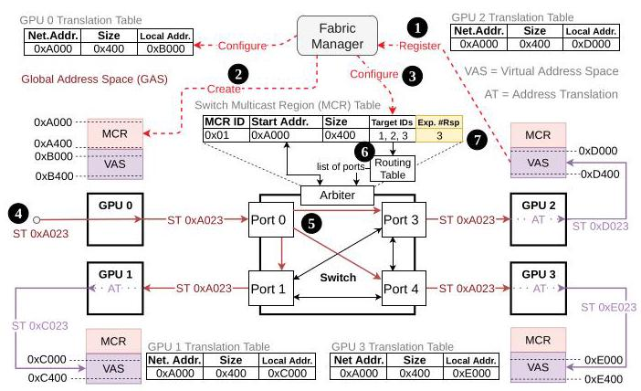
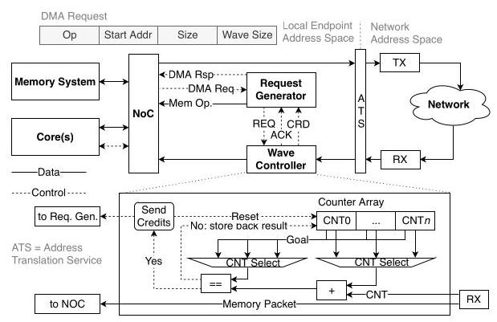

An In-Network Architecture for Accelerating Shared-Memory Multiprocessor Collectives
Benjamin Klenk
本文提出了一种以加速器为中心、共享内存的网络架构，用于加速集合通信操作（collective operations），尤其是对分布式深度学习（DL）训练至关重要的全归约（All-Reduce）操作。作者认为，现有的网内归约（in-network reduction）方案依赖于CPU发起的消息传递（message-passing）和预留协议（reservation protocols），这些机制并不适用于具有全局共享地址空间（globally shared address space）以及非确定性、包级内存操作（packet-level memory operations）的高度并行GPU。
主要贡献包括：（1）通过网络组播区域（multicast regions, MCRs）映射到全局虚拟地址空间，实现网络支持的组播（multicast）；（2）两种网内归约设计——拉取（Pull）与推送（Push），二者在端点/交换机复杂度上存在不同权衡；（3）交换机归约表（switch reduction tables）和DMA引擎扩展，并引入基于波次的注入限制（wave-based injection limiting）以避免拥塞（congestion）和死锁（deadlocks）；（4）通过对一个类似DGX-2的16 GPU系统和一个128 GPU胖树（Fat-Tree）系统进行周期精确模拟（cycle-accurate simulation）来评估性能。
结果表明，对于大消息，网内归约相比软件环形全归约（software ring All-Reduce）带宽提升最高可达2倍，对于小消息最高可达18倍，这主要得益于消除了同步开销（synchronization overhead）。在大消息场景下，推送（Push）方法通常优于拉取（Pull）方法，且需要更小的交换机表，而拉取（Pull）方法更易于实现。使用推送方法时，在基于NVLink连接的系统中，Transformer的深度学习训练加速预计可达1.4倍，在以太网（Ethernet）或未来计算密集型GPU上收益更大。该设计具有可扩展性，尽管128 GPU模拟显示，在没有拥塞控制的情况下，由于网络拥塞，峰值带宽有所下降。总体而言，本文证明，适度的交换机硬件增强（归约缓冲区和ALU）能够显著加速全归约（All-Reduce）操作，并提升深度学习训练性能。
NVIDIA, USA
本文提出了一种以加速器为中心（accelerator-centric）的共享内存式网络架构，用于加速集合操作（collective operations），特别是对分布式深度学习（DL）训练至关重要的全归约（All-Reduce）。作者认为，现有的网络内归约（in-network reduction）方案依赖于 CPU 发起的消息传递和预留协议，这些机制并不适合具有全局共享地址空间以及非确定性、数据包级（packet-level）内存操作的高度并行 GPU。
主要贡献包括：（1）通过映射到全局虚拟地址空间中的多播区域（multicast regions, MCR）实现网络支持的多播；（2）两种网络内归约设计——拉取（Pull）和推送（Push）——在端点/交换机复杂度方面有着不同的权衡取舍；（3）交换机归约表和 DMA 引擎扩展，并通过基于波次的注入限制（wave-based injection limiting）来避免拥塞和死锁；（4）在类似 DGX-2 的 16-GPU 系统和 128-GPU 胖树（Fat-Tree）上进行了周期精确模拟（cycle-accurate simulation）评估。
结果表明，对于大消息，网络内归约相比软件环形全归约（software ring All-Reduce）可实现高达 2 倍的带宽提升；对于小消息，最高可达 18 倍，这主要归功于消除了同步开销。在大消息场景下，推送方法通常优于拉取方法，且所需的交换机表更小，而拉取方法实现起来更简单。采用推送方法时，在 NVLink 互连的系统上，Transformer 的预期 DL 训练加速比可达 1.4 倍；在以太网或未来计算密集型 GPU 上，收益更大。该设计具有可扩展性，不过 128-GPU 模拟显示，在缺少拥塞控制的情况下，网络拥塞会导致峰值带宽下降。总体而言，本文表明，适度增加交换机硬件（归约缓冲区和算术逻辑单元 ALU）即可显著加速全归约，并提升 DL 训练性能。
美国，NVIDIA
bklenk@nvidia.com
本文提出了一种以加速器为中心（accelerator-centric）的共享内存（shared-memory）网络架构，用于加速集合通信操作（collective operations），尤其是分布式深度学习（DL）训练中至关重要的全归约（All-Reduce）操作。作者认为，现有的网络内归约（in-network reduction）方案依赖于由CPU发起的消息传递（message-passing）和预留协议（reservation protocols），这些机制并不适用于具有全局共享地址空间（globally shared address space）以及非确定性、包级内存操作的高度并行GPU。
主要贡献包括：(1) 通过网络支持的多播区域（multicast regions, MCRs）实现网络多播，并将其映射到全局虚拟地址空间中；(2) 两种网络内归约设计——拉取（Pull）和推送（Push）——在端侧/交换机复杂度上各有不同的权衡；(3) 交换机归约表（reduction tables）和DMA引擎扩展，并采用基于波前（wave-based）的注入限制以避免拥塞和死锁；(4) 通过在类似DGX-2的16-GPU系统和128-GPU胖树（Fat-Tree）系统上进行周期精确模拟（cycle-accurate simulation）进行评估。
结果表明，对于大消息，网络内归约相比软件环形全归约（software ring All-Reduce）实现了高达2倍的带宽提升；对于小消息，则高达18倍，主要原因是消除了同步开销。对于大消息，推送（push）方法通常优于拉取（pull）方法，且需要的交换机表更小，而拉取（pull）方法实现更简单。采用推送方法，在基于NVLink连接的系统中，Transformer的深度学习训练加速比预计可达1.4倍；在以太网或未来计算密集型GPU上，收益更大。该设计具有可扩展性，尽管128-GPU模拟显示，在无拥塞控制（congestion control）的情况下，由于网络拥塞，峰值带宽有所下降。总体而言，本文证明，适度的交换机硬件添加（归约缓冲区和算术逻辑单元ALU）可以显著加速全归约（All-Reduce）操作并提升深度学习训练性能。
Nan Jiang
本文提出了一种以加速器为中心、共享内存的网络架构，以加速集合通信操作，特别是全归约 (All-Reduce)，该操作在分布式深度学习 (deep learning) 训练中至关重要。作者认为，现有的网络内归约 (in-network reduction) 方案依赖于CPU发起的消息传递和预留协议，这些协议不适合具有全局共享地址空间以及非确定性、包级内存操作的高度并行GPU。
主要贡献包括：(1) 通过网络内组播区域 (multicast regions, MCRs) 映射到全局虚拟地址空间来实现网络支持的组播；(2) 两种网络内归约设计——拉取 (Pull) 和推送 (Push)——在端节点/交换机复杂度之间存在不同的权衡；(3) 交换机归约表和DMA引擎扩展，采用基于波次的注入限流以避免拥塞和死锁；(4) 通过周期精确模拟，在类似DGX-2的16-GPU系统和128-GPU胖树 (Fat-Tree) 网络上进行评估。
实验结果表明，对于大消息，网络内归约相比软件环形全归约 (software ring All-Reduce) 实现了高达2倍的带宽提升，对于小消息则高达18倍，主要原因是消除了同步开销。推送方案在大消息场景下通常优于拉取方案，且需要更小的交换机表，而拉取方案在实现上更为简单。使用推送方案，在NVLink连接的系统上，Transformer的深度学习训练速度预计可达1.4倍的加速，在以太网或未来计算密集型GPU上的收益更大。这些设计是可扩展的，尽管128-GPU模拟显示，由于没有拥塞控制，网络拥塞会导致峰值带宽下降。总体而言，本文表明，适度的交换机硬件增强（归约缓冲区 (reduction buffers) 和算术逻辑单元 (ALUs)）可以显著加速全归约操作，并提升深度学习训练性能。
NVIDIA, USA
NVIDIA, 美国
tedj@nvidia.com
NVIDIA 集合通信库 (NCCL) 提供多节点间的全归约 (AllReduce) 操作。其核心算法有两种：环形 (Ring) 算法和树形 (Tree) 算法。环形算法的带宽随节点数 k 线性扩展（即总带宽随着 k 线性增长），但延迟也随 k 线性增加；树形算法的延迟随 k 呈对数增长，但带宽扩展性较差。
NCCL 会依据消息大小和硬件拓扑结构，在运行时动态选择最优算法。在 NCCL 2.0 之前，仅支持环形算法；树形算法于 2.0 版本中引入，自 2.6 版本起，NCCL 可通过拓扑感知算法自动检测新拓扑结构。
具体而言，当消息较小时，延迟成为性能瓶颈，树形算法最优；当消息较大时，带宽成为瓶颈，环形算法更佳。因此，测试中对 NCCL 的大消息场景采用更短的迭代次数，以节省挂钟时间 (wall clock time) 消耗。
Greg Thorson
本文提出了一种以加速器为中心的共享内存网络架构，用于加速集合操作 (collective operations)，特别是全归约 (All-Reduce)，后者在分布式深度学习 (DL) 训练中至关重要。作者认为，现有的网内归约 (in-network reduction) 方案依赖于 CPU 发起的消息传递和预留协议 (reservation protocols)，难以适用于具有全局共享地址空间以及非确定性包级内存操作的高度并行 GPU。
主要贡献包括：（1）通过映射到全局虚拟地址空间中的多播区域 (multicast regions, MCRs) 实现网络支持的多播；（2）两种网内归约设计——拉取 (Pull) 和推送 (Push)——二者在端点/交换机复杂度之间存在不同的权衡；（3）交换机归约表和 DMA 引擎扩展，并利用基于波次的注入限制 (wave-based injection limiting) 来避免拥塞和死锁；（4）在类似 16-GPU DGX-2 的系统和 128-GPU 胖树 (Fat-Tree) 上通过周期精确模拟 (cycle-accurate simulation) 进行评估。
结果表明：对于大消息，网内归约相比软件环形全归约 (software ring All-Reduce) 可实现最高 2× 的带宽提升；对于小消息，最高可达 18×，这主要归功于消除了同步开销。推送方法在处理大消息时通常优于拉取方法，且所需的交换机表更小，而拉取方法实现起来更简单。采用推送方法时，在 NVLink 连接的系统中，Transformer 的深度学习训练加速比预计可达 1.4×；在以太网 (Ethernet) 或未来计算密集型 GPU 上，加速效果更大。这些设计具有良好的可扩展性，不过 128-GPU 模拟显示，由于网络未采用拥塞控制而导致拥塞，峰值带宽有所下降。总体而言，本文表明，适度增加交换机硬件（归约缓冲区 (reduction buffers) 和算术逻辑单元 (ALU)）即可显著加速全归约，并提升深度学习训练性能。
Greg Thorson
NVIDIA, USA
本文提出了一种以加速器为中心（accelerator-centric）的共享内存网络架构（shared-memory network architecture），用于加速集合通信操作（collective operations），尤其是对分布式深度学习（DL）训练至关重要的全归约（All-Reduce）。作者认为，现有的网络内归约（in-network reduction）方案依赖于CPU发起的消息传递（message-passing）和预留协议（reservation protocols），这些机制不适合具有全局共享地址空间以及非确定性、分组级（packet-level）内存操作的高度并行GPU。
主要贡献包括：（1）通过映射到全局虚拟地址空间中的多播区域（multicast regions，MCRs）实现网络支持的多播（multicast）；（2）两种网络内归约设计——拉取（Pull）和推送（Push）——在端点/交换机复杂度权衡上有所不同；（3）交换机归约表（reduction tables）和DMA引擎扩展，并采用基于波次的注入限制（wave-based injection limiting）以避免拥塞和死锁；（4）在类似DGX-2的16 GPU系统和128 GPU胖树（Fat-Tree）网络上通过周期精确仿真（cycle-accurate simulation）进行评估。
结果表明，对于大消息，网络内归约相比软件环形全归约（software ring All-Reduce）可实现高达2倍的带宽提升；对于小消息，提升幅度可达18倍，这主要归功于消除了同步开销。对于大消息，推送方法通常优于拉取方法，且所需交换机归约表更小，而拉取方法实现更简单。采用推送方法时，Transformer模型在NVLink连接的系统上的DL训练加速预计可达1.4倍，在以太网或未来计算密集型GPU上可获得更大增益。这些设计具有可扩展性，尽管128 GPU仿真显示，在没有拥塞控制的情况下，网络拥塞会导致峰值带宽降低。总体而言，本文表明，在交换机上增加少量硬件（归约缓冲区和算术逻辑单元（ALU））即可大幅加速全归约，并提升深度学习训练性能。
NVIDIA，美国
gthorson@nvidia.com
本文提出了一种以加速器为中心的共享内存网络架构，用于加速集合操作（collective operations），特别是全归约（All-Reduce），该操作在分布式深度学习（DL）训练中至关重要。作者认为，现有的网内归约（in-network reduction）方案依赖于CPU发起的消息传递和预留协议，这些协议不适合具有全局共享地址空间以及非确定性、包级内存操作的高度并行GPU。主要贡献包括：（1）通过映射到全局虚拟地址空间的多播区域（multicast regions, MCRs）实现网络支持的多播；（2）两种网内归约设计——拉取（Pull）和推送（Push）——在端点/交换机复杂度权衡上有所不同；（3）交换机归约表、DMA引擎扩展以及基于波次的注入限制（wave-based injection limiting），以避免拥塞和死锁；（4）在类DGX-2的16-GPU系统和128-GPU胖树（Fat-Tree）网络上进行周期精确模拟（cycle-accurate simulation）评估。结果表明，与软件环形全归约（software ring All-Reduce）相比，网内归约在大消息上实现了高达2倍的带宽提升，在小消息上实现了高达18倍的提升，主要原因是消除了同步开销。推送方法在大消息上通常优于拉取方法，并且需要的交换机表更小，而拉取方法实现更简单。使用推送方法，在NVLink连接的系统中，Transformer的深度学习训练预计加速比可达1.4倍，在以太网或未来计算密集型GPU上收益更大。这些设计具有可扩展性，尽管128-GPU模拟显示，在没有拥塞控制的情况下，网络拥塞会导致峰值带宽下降。总体而言，本文证明了适度的交换机硬件扩展（归约缓冲区和算术逻辑单元（ALU））可以显著加速全归约（All-Reduce）并提升深度学习训练性能。
Larry Dennison
本文提出了一种以加速器为中心、共享内存的网络架构，以加速集合通信操作 (collective operations)，尤其是对分布式深度学习 (DL) 训练至关重要的全归约 (All-Reduce) 操作。作者认为，现有的网内归约 (in-network reduction) 方案依赖于CPU发起的消息传递和预留协议，这并不适用于具有全局共享地址空间以及非确定性、包级内存操作的高度并行GPU。
主要贡献包括：（1）通过映射到全局虚拟地址空间中的组播区域 (multicast regions, MCRs) 实现网络支持的组播 (multicast)；（2）两种网内归约设计——拉取 (Pull) 和推送 (Push)——在端点和交换机复杂性之间有不同的权衡；（3）交换机归约表 (switch reduction tables) 和直接内存访问引擎 (DMA engine) 扩展，并采用基于波次的注入限制 (wave-based injection limiting) 以避免拥塞和死锁；（4）在类似于DGX-2的16-GPU系统以及128-GPU胖树 (Fat-Tree) 网络上通过周期精确模拟 (cycle-accurate simulation) 进行评估。
结果表明，对于大消息，网内归约相比软件环形全归约 (ring All-Reduce) 可实现高达2倍的带宽提升，而对于小消息则可实现高达18倍的提升，这主要归功于消除了同步开销。推送 (Push) 方法在大消息场景下通常优于拉取 (Pull) 方法，且需要的交换机表更小，而拉取 (Pull) 方法实现更为简单。采用推送 (Push) 方法后，在基于NVLink连接的系统中，Transformer的深度学习训练速度预计可提升1.4倍，而在以太网或未来计算密集型GPU上可获得更大增益。这些设计具有可扩展性，尽管128-GPU模拟显示，由于缺乏拥塞控制，网络拥塞会导致峰值带宽下降。总体而言，本文表明，适度的交换机硬件增强（归约缓冲区和算术逻辑单元 (ALU)）能够显著加速全归约 (All-Reduce) 并提升深度学习训练性能。
NVIDIA, USA
本文提出了一种以加速器为中心、共享内存的网络架构，用于加速集合通信操作，尤其是全归约 (All-Reduce)，而该操作在分布式深度学习 (DL) 训练中至关重要。作者认为，现有的网络内归约 (in-network reduction) 方案依赖由 CPU 发起的消息传递和预留协议，而这并不适用于具有全局共享地址空间以及非确定性、包级内存操作的高度并行 GPU。
主要贡献包括：(1) 通过映射到全局虚拟地址空间中的多播区域 (multicast regions, MCRs) 实现网络支持的组播；(2) 两种网络内归约设计——拉取 (Pull) 和推送 (Push)——在终端/交换机复杂度上具有不同的权衡；(3) 交换机归约表和 DMA 引擎扩展，并引入基于波次的注入限制以避免拥塞和死锁；(4) 通过在类似 DGX-2 的 16-GPU 系统和 128-GPU 胖树 (Fat-Tree) 系统上进行周期精确仿真来评估。
结果表明，对于大消息，网络内归约相比软件环形全归约 (software ring All-Reduce) 可获得高达 2 倍的带宽提升；对于小消息，提升可达 18 倍，这主要得益于消除了同步开销。推送方法在大消息场景下通常优于拉取方法，且所需的交换机表更小，而拉取方法在实现上更简单。采用推送方法时，在基于 NVLink 连接的系统中，Transformer 的预测深度学习训练加速比可达 1.4 倍，而在以太网或未来计算密集型 GPU 上收益更大。这些设计具有可扩展性，尽管 128-GPU 仿真显示，在缺乏拥塞控制的情况下，网络拥塞会导致峰值带宽下降。总体而言，本文表明，适度的交换机硬件扩展（归约缓冲区和算术逻辑单元 (ALUs)）即可显著加速 All-Reduce 并提升深度学习训练性能。
ldennison@nvidia.com
本文提出了一种以加速器为中心（accelerator-centric）的共享内存网络（shared-memory network）架构，旨在加速集合操作（collective operations），尤其是对分布式深度学习（distributed deep learning, DL）训练至关重要的 All-Reduce。作者认为，现有的网络内归约（in-network reduction）方案依赖于CPU发起的消息传递（message-passing）和预留协议（reservation protocols），这些协议不适合具有全局共享地址空间（globally shared address space）和非确定性、数据包级内存操作（packet-level memory operations）的高度并行GPU。
主要贡献包括：（1）通过映射到全局虚拟地址空间（virtual address space）中的多播区域（multicast regions, MCRs）实现网络支持的多播；（2）两种网络内归约设计——Pull 和 Push——在端点/交换机复杂度（endpoint/switch complexity）方面具有不同的权衡；（3）交换机归约表（switch reduction tables）以及采用基于波次的注入限制（wave-based injection limiting）以避免拥塞（congestion）和死锁（deadlocks）的DMA引擎扩展（DMA engine extensions）；（4）通过在类DGX-2的16-GPU系统和128-GPU胖树（Fat-Tree）上进行周期精确仿真（cycle-accurate simulation）进行评估。
结果表明，对于大消息，网络内归约相比软件环形 All-Reduce（software ring All-Reduce）可实现高达2倍的带宽提升，对于小消息则可实现高达18倍的提升，这主要归功于消除了同步开销（synchronization overhead）。对于大消息，Push 方法通常优于 Pull 方法，且所需的交换机表更小，而 Pull 方法实现起来更简单。采用 Push 方法时，在 NVLink 连接（NVLink-connected）的系统中，Transformer 的深度学习训练加速预计可达1.4倍，在以太网（Ethernet）或未来计算密集型GPU上可获得更大的提升。这些设计具有良好的可扩展性，尽管128-GPU仿真显示，由于缺乏拥塞控制（congestion control），网络拥塞导致峰值带宽降低。总体而言，本文表明，适度的交换机硬件增强（归约缓冲区（reduction buffers）和ALU）能够显著加速 All-Reduce 并提升深度学习训练性能。
ldennison@nvidia.com
Abstract-The slowdown of single-chip performance scaling combined with the growing demands of computing ever larger problems efficiently has led to a renewed interest in distributed architectures and specialized hardware. Dedicated accelerators for common or critical operations are becoming cost-effective additions to processors, peripherals, and networks. In this paper we focus on one such operation, the All-Reduce, which is both a common and critical feature of neural network training. All-Reduce is impossible to fully parallelize and difficult to amortize, so it benefits greatly from hardware acceleration.
摘要-单芯片性能扩展的放缓，加上对高效计算更大规模问题的日益增长的需求，重新引发了人们对分布式架构和专用硬件的兴趣。针对常见或关键操作的专用加速器正成为处理器、外设和网络中具有成本效益的补充。在本文中，我们专注于这样一项操作——全归约 (All-Reduce)，它是神经网络训练中常见且关键的特性。全归约无法完全并行化，且难以分摊成本，因此它极大地受益于硬件加速。
We are proposing an accelerator-centric, shared-memory network that improves All-Reduce performance through in-network reductions, as well as accelerating other collectives like Multicast. We propose switch designs to support in-network computation, including two reduction methods that offer trade-offs in implementation complexity and performance. Additionally, we propose network endpoint modifications to further improve collectives.
我们提出了一种以加速器为中心 (accelerator-centric) 的共享内存网络 (shared-memory network)，通过网络内归约 (in-network reductions) 提升全归约 (All-Reduce) 性能，并加速其他集合通信 (collectives) 如多播 (Multicast)。我们提出了支持网络内计算的交换机设计，包括两种归约方法，它们在实现复杂度和性能之间提供了权衡。此外，我们提出了网络端点修改方案，以进一步改进集合通信。
We present simulation results for a 16 GPU system showing that our collective acceleration design improves the All-Reduce operation by up to \(2\mathrm{x}\) for large messages and up to \({18}\mathrm{x}\) for small messages when compared with a state-of-the-art software algorithm, leading up to 1.4x faster DL training times for networks like Transformer. We demonstrate that this design is scalable to large systems and present results for up to 128 GPUs.
我们展示了一个16 GPU系统的模拟结果，表明与最先进的软件算法相比，我们的集合通信加速设计（collective acceleration design）将全归约操作（All-Reduce operation）在大消息上提升高达 \(2\mathrm{x}\)，在小消息上提升高达 \({18}\mathrm{x}\)，从而使Transformer等网络的深度学习（DL）训练时间加快高达1.4倍。我们证明该设计可扩展到大规模系统，并展示了多达128个GPU的结果。
I. INTRODUCTION
As the amount of data we generate increases at staggering rates, compute resources on which data is processed need to keep up. While we observe that computing systems are becoming increasingly parallel, they are also being augmented by specialized hardware to accelerate performance-critical tasks. Examples of such specialized hardware include the Graphics Processing Unit (GPU), Field Programmable Gate Arrays (FPGAs) and various Machine and Deep Learning (ML/DL) accelerators like Google's Tensor Processing Unit (TPU) [1]. These specialized processors not only increase performance but also provide much better power efficiency and therefore allow for higher compute density and scaling.
随着我们生成的数据量以惊人的速度增长，处理数据的计算资源需要跟上这一步伐。虽然我们观察到计算系统正变得越来越并行化，但它们也在通过专用硬件来加速性能关键型任务。这类专用硬件的例子包括图形处理单元 (Graphics Processing Unit, GPU)、现场可编程门阵列 (Field Programmable Gate Arrays, FPGA) 以及各种机器学习和深度学习 (Machine and Deep Learning, ML/DL) 加速器，例如谷歌的张量处理单元 (Tensor Processing Unit, TPU) [1]。这些专用处理器不仅提升了性能，还提供了更高的能效，从而实现更高的计算密度和扩展性。
With increased parallelism, performance scalability becomes increasingly dependent on communication. Similar to how compute tasks can be accelerated by specialized hardware, certain communication patterns benefit from such specialization as well. A common pattern among scientific and especially distributed ML/DL applications are collectives. A simple example is the broadcast in which many processors receive the same data from one processor.
随着并行性 (parallelism) 的提高，性能可扩展性 (performance scalability) 越来越依赖于通信 (communication)。类似于计算任务 (compute tasks) 可以由专用硬件 (specialized hardware) 加速，某些通信模式 (communication patterns) 也同样受益于这种专用化。在科学应用，尤其是分布式机器学习/深度学习 (ML/DL) 应用中，集合通信 (collectives) 是一种常见模式。一个简单的例子是广播 (broadcast)，即一个处理器向多个处理器发送相同的数据。
Although most of these collective patterns are only concerned with data distribution, the Reduce and All-Reduce operations also involve computation. In the Reduce operation, participating processors send their data to a root processor on which the data is reduced according to an arithmetic or relational operation. In the case of the All-Reduce operation the result is also broadcast to every participant. The All-Reduce operation is especially critical in parallel DL training algorithms on distributed systems. After each worker calculated the gradients of the parameters, these gradients need to be aggregated among all workers, resulting in one or more All-Reduce operations per training iteration. This operation can quickly become a bottleneck [2]-[4], motivating the need for specialized hardware to accelerate this common operation.
尽管大多数这些集合通信模式仅涉及数据分发，归约 (Reduce) 和全归约 (All-Reduce) 操作还涉及计算。在归约 (Reduce) 操作中，参与的处理器将其数据发送到一个根处理器 (root processor)，在该处理器上根据算术或关系运算对数据进行归约。在全归约 (All-Reduce) 操作中，结果还会广播给每个参与者。全归约 (All-Reduce) 操作在分布式系统上的并行深度学习 (DL) 训练算法中尤其关键。在每个工作节点计算出参数梯度后，这些梯度需要在所有工作节点之间进行聚合，导致每次训练迭代执行一次或多次全归约 (All-Reduce) 操作。该操作很快就会成为瓶颈 [2]-[4]，因此有必要使用专用硬件来加速这一常见操作。
Previous work has shown that offloading reduction computation into the network can be an effective technique [2], [3], [5]. However, existing work is limited to CPU-initiated communication models where data movement between the accelerators are coordinated by the CPU using message passing protocols and often require explicit resource reservations. In a highly parallelized environment, this adds overhead that diminishes the performance gain offered by in-network reduction. Furthermore, in distributed shared-memory systems, network packets carrying memory operations are small and numerous, making reservation protocols prohibitively expensive.
已有工作表明，将归约（reduction）计算卸载到网络中是一种有效技术 [2], [3], [5]。然而，现有工作局限于CPU发起的通信模型（CPU-initiated communication model），其中加速器之间的数据移动由CPU通过消息传递协议（message passing protocol）协调，且通常需要显式的资源预留（resource reservation）。在高度并行的环境中，这会增加开销，从而削弱网络内归约（in-network reduction）所带来的性能提升。此外，在分布式共享内存系统（distributed shared-memory system）中，携带内存操作（memory operation）的网络数据包既小又多，使得预留协议（reservation protocol）代价高昂而难以承受。
In this work, we focus instead on an accelerator-centric communication model, where accelerators are directly attached to a distributed shared-memory fabric. Such a system architecture is exemplified by GPUs interconnected with NVIDIA's NVLink/NVSwitch [6] network or AMD's InfinityFabric [7] network. We propose a network/endpoint co-design architecture that accelerates various collective communication patterns, with a focus on the All-Reduce operation. Our approach is designed for highly parallel accelerators with millions of threads, sharing a global address space. The contributions of this work can be summarized as follows:
在本工作中，我们转而关注一种以加速器为中心的通信模型 (accelerator-centric communication model)，其中加速器直接连接到分布式共享内存结构 (distributed shared-memory fabric)。这种系统架构的实例包括通过 NVIDIA 的 NVLink/NVSwitch [6] 网络或 AMD 的 InfinityFabric [7] 网络互连的 GPU。我们提出了一种网络/端点协同设计架构 (network/endpoint co-design architecture)，用于加速各种集合通信模式 (collective communication patterns)，重点关注全归约 (All-Reduce) 操作。我们的方法针对具有数百万线程、共享全局地址空间 (global address space) 的高度并行加速器而设计。本工作的贡献可总结如下：
- We present a novel scalable shared-memory collective architecture for massively parallel accelerator systems.
- 我们提出了一种针对大规模并行加速器系统的新型可扩展共享内存集合通信（shared-memory collective）架构。
- We present two different in-network reduction methods which differ in complexity of endpoints and switches.
我们提出了两种不同的网络内归约 (in-network reduction) 方法，它们在端点 (endpoint) 和交换机 (switch) 的复杂度上有所不同。
- We show how we can extend DMA engines to efficiently use the in-network reduction methods to improve resource utilization and performance.
- 我们展示了如何扩展DMA引擎 (DMA engines)，以高效地利用网内归约方法 (in-network reduction methods)，从而提高资源利用率和性能。
- Our results show that our mechanisms are up to an order of magnitude faster than state-of-the-art software solutions, but also more suitable to large-scale, shared-memory systems than existing hardware proposals.
- 我们的结果表明，与最先进的软件解决方案相比，我们的机制快至多一个数量级，而且比现有的硬件方案更适合大规模共享内存系统。
- We evaluate the benefits of our designs for the training of widely used and important deep neural networks.
我们评估了我们的设计在训练广泛使用且重要的深度神经网络 (deep neural networks) 方面的益处。
The remainder of the paper starts with the background in § II. We review state-of-the-art software algorithms for the All-Reduce operation in § III. This is followed by a description of our system architecture in \(§\) IV, before results from our simulations are presented in \(§\mathrm{V}\) and VI. Related work is given in \(§\) VII. The conclusion is presented in \(§\) VIII.
本文的其余部分首先在§ II中介绍背景。我们在§ III中回顾了用于全归约（All-Reduce）操作的最先进的软件算法。随后在\(§\) IV中描述我们的系统架构，之后在\(§\mathrm{V}\)和VI中展示模拟结果。相关工作见\(§\) VII。结论在\(§\) VIII中给出。
II. BACKGROUND AND MOTIVATION
A. Accelerated Computing Systems
Our work focuses on accelerator-centric systems with networks that directly interconnect massively parallel accelerators rather than CPUs. Particularly, we use NVIDIA's DGX-2 [6] as a reference for such a system, but this work also applies to other shared-memory systems as well.
我们的工作聚焦于以加速器为中心（accelerator-centric）的系统，其中网络直接互连大规模并行加速器而非CPU。特别是，我们使用英伟达的DGX-2 [6] 作为此类系统的参考，但这项工作同样适用于其他共享内存（shared-memory）系统。
The DGX-2 system has 16 GPUs, each with 6 NVLink ports. The system implements a network with a Fat-Tree topology using twelve 16-port NVSwitches. GPUs and switches are evenly divided into two groups and within a group, each switch is connected to each of the 8 GPUs via one NVLink. Each switch's remaining 8 ports are connected to a switch in the other group. This topology provides full-bisection bandwidth.
DGX-2 系统有 16 个 GPU，每个 GPU 有 6 个 NVLink 端口。该系统使用十二个 16 端口 NVSwitch 实现了胖树（Fat-Tree）拓扑的网络。GPU 和交换机被均匀分成两组，组内每个交换机通过一条 NVLink 连接到 8 个 GPU 中的每一个。每个交换机剩余的 8 个端口连接到另一组中的交换机。该拓扑提供全对分带宽（full-bisection bandwidth）。
The NVLink fabric allows GPUs to access every GPU's memory through ordinary memory operations, such as loads, stores, or atomics. While many existing in-network reduction proposals [2], [3], [5] are based on message-passing communication with a single source for each message, allowing them to use rather complex reservation protocols, GPUs and their shared memory fabric don't fit this paradigm. Multi-GPU systems operate with millions of concurrently executing threads and a globally shared address space. The order in which these threads execute can be arbitrary and non-deterministic. Any network and reduction protocols that rely on a certain injection and ejection order are not feasible. Furthermore, packets in the network represent individual memory operations, which are both small and numerous. It is therefore essential for packets to have a lean format with minimal overheads, rendering existing message-passing and reservation-based protocols prohibitive. While GPUs do not implement complex network interfaces, they provide a plurality of simple DMA engines to which linear and multi-dimensional data transfers can be offloaded. In principle, these DMA engines create multiple requests that are issued to the memory system or network. DMA engines receive their commands through a command queue which is written by the host processor. Completed data transfers are signaled through the command interface as well. Although DMA engines might appear as a single source of a message, the resulting data stream still does not guarantee any ordering and remains non-deterministic.
NVLink 结构 (fabric) 允许GPU通过普通内存操作（如加载 (loads)、存储 (stores) 或原子操作 (atomics)）访问每个GPU的内存。虽然许多现有的网内归约 (in-network reduction) 方案 [2]、[3]、[5] 基于消息传递通信 (message-passing communication)，每条消息只有一个源，因而可以使用相当复杂的预留协议 (reservation protocols)，但GPU及其共享内存结构并不符合这种范式。多GPU系统运行着数百万个并发执行的线程，并拥有全局共享的地址空间。这些线程的执行顺序可以是任意且非确定性的。任何依赖于特定注入和弹出顺序的网络及归约协议都是不可行的。此外，网络中的数据包代表单个内存操作，既小又多。因此，数据包必须采用开销极小的精简格式，这使得现有的基于消息传递和预留的协议变得不可行。虽然GPU不实现复杂的网络接口，但它们提供了多个简单的DMA引擎，可以将线性和多维数据传输卸载到这些引擎上。原则上，这些DMA引擎会创建多个请求，并发出到内存系统或网络。DMA引擎通过命令队列 (command queue) 接收命令，该队列由主机处理器 (host processor) 写入。数据传输的完成也通过命令接口发出信号。尽管DMA引擎可能看起来像是一条消息的单一来源，但由此产生的数据流仍然不保证任何顺序，并且保持非确定性。
B.DL Training
Deep neural nets (DNNs) have been shown to produce excellent and sometimes better-than-human results in tasks like image classification [8] or complex games like Go [9]. Before these networks can make accurate predictions, however, they need to be trained on large amounts of data. The training can take hours or even days and is extremely compute intensive. The following presents an overview on how neural nets are trained in parallel and highlights the importance of the All-Reduce operation.
深度神经网络（Deep Neural Networks, DNNs）已被证明在图像分类 [8] 或围棋（Go）等复杂游戏 [9] 等任务中产生出色甚至有时超越人类的结果。然而，在这些网络能够做出准确预测之前，它们需要接受大量数据的训练。训练过程可能需要数小时甚至数天，并且极其计算密集。以下内容概述了如何并行训练神经网络，并强调了全归约（All-Reduce）操作的重要性。
1) Methodology: We analyze the communication requirements of DL training in two ways. For data-parallel training we use an accurate performance model to determine the time spent on every layer of a DNN. The model comprises a detailed description of the compute and memory system of a NVIDIA Volta GPU and matches real silicon performance closely. After we have calculated the compute time for each layer, we walk through the computational graph and determine how many weight gradients are being generated, as these need to be reduced among workers. The reduction can be implemented as a single, non-overlapped All-Reduce at the end of an iteration (one-shot), or as smaller All-Reduce operations for each gradient-producing layer. The latter allows overlap of communication with computation. Our model-based approach allows us to study various effects, such as hypothetical performance improvements of future GPUs, different network bandwidths, and various All-Reduce algorithms.
1) 方法论：我们从两个方面分析深度学习（DL）训练的通信需求。对于数据并行训练（data-parallel training），我们使用一个准确的性能模型（performance model）来确定在深度神经网络（DNN）每一层上花费的时间。该模型包含了对NVIDIA Volta GPU计算和存储系统的详细描述，并且与真实芯片性能高度吻合。在计算完每一层的计算时间后，我们遍历计算图（computational graph），确定生成了多少权重梯度（weight gradients），因为这些梯度需要在工作节点（workers）之间进行归约。该归约既可以实现为一次迭代结束时单个、不重叠的全归约（All-Reduce）（一次性（one-shot）方式），也可以实现为针对每个生成梯度的层进行较小的全归约操作。后者允许在计算过程中重叠通信。我们的基于模型的方法使我们能够研究各种影响，例如假设的未来GPU性能提升、不同的网络带宽以及各种全归约算法。
For model parallelism we focus on NVIDIA's Megatron [10], one of the largest natural language model to date. We measure the iteration time with the All-Reduce and without the All-Reduce on a real Volta-based DGX-2 system. We report time spent in the All-Reduce operation. Megatron's model parallelism does not allow for overlap and we can therefore rely on measurements on real systems.
对于模型并行 (model parallelism)，我们专注于 NVIDIA 的 Megatron [10]，这是迄今为止规模最大的自然语言模型之一。我们在基于 Volta 的真实 DGX-2 系统上，分别测量了启用和未启用全归约 (All-Reduce) 时的迭代时间 (iteration time)。我们报告了全归约操作所花费的时间。Megatron 的模型并行不支持重叠 (overlap)，因此我们可以依赖真实系统上的测量结果。
2) All-Reduce in Data Parallelism (DP): Data-parallel training is the most common approach to parallel training. In stochastic gradient descent (SGD) a mini-batch of input samples is divided among processors. Each processor trains a model replica on its set of samples, which we refer to as sub-batch, and calculates weight gradients which are then reduced among all processors.
2) 数据并行 (Data Parallelism, DP) 中的全归约 (All-Reduce)：数据并行训练 (data-parallel training) 是并行训练中最常见的方法。在随机梯度下降 (stochastic gradient descent, SGD) 中，一个输入样本的小批量 (mini-batch) 会被划分到各个处理器。每个处理器在其样本子集（我们称之为子批次 (sub-batch)）上训练一个模型副本 (model replica)，并计算权重梯度，然后这些梯度会在所有处理器之间进行归约。
In order to assess the importance of the All-Reduce we need to take the training system into account. An NVIDIA Volta GPU [11] provides a theoretical performance of 120TFLOP/s and 150GB/s unidirectional NVLink bandwidth. While this is twice as much bandwidth as the previous Pascal architecture [12], the compute performance grew by a factor of \({12}\mathrm{x}\) for DL training, mainly enabled by specialized hardware like tensor cores [13]. While hardware is getting faster and more specialized for important applications like the training of DNNs, software also improves rapidly. For example, many MLPerf v0.6 [14] submissions were run on the same hardware as MLPerf v0.5 [15], but average performance increased by 1.5x with a maximal improvement of 2.85x (ResNet-50, 32 DGX-2H) in just about 7 months. Consequently, instead of showing performance results for Volta only we consider future GPU systems and we believe the compute performance will grow more rapidly than I/O bandwidth, driven by software and hardware improvements. Therefore, we modeled a configuration that achieves two times higher compute performance at the same bandwidth (150GB/s), labeled Volta 2:1, and four times higher compute performance, labeled Volta 4:1. Since prior work focused on Ethernet we also show configurations that assume one Ethernet port per GPU with 10Gbps and 100Gbps bandwidth. This is equivalent to nodes with one Ethernet interface per GPU.
为了评估 All-Reduce（全规约）的重要性，我们需要将训练系统纳入考量。一块 NVIDIA Volta GPU [11] 提供 120TFLOP/s 的理论计算性能和 150GB/s 的单向 NVLink 带宽。虽然这一带宽是上一代 Pascal 架构 [12] 的两倍，但用于深度学习（DL）训练的计算性能却提升了 \({12}\mathrm{x}\)，这主要得益于张量核心（tensor core）等专用硬件 [13]。在硬件针对 DNN（深度神经网络）训练等重要应用变得更快、更专用的同时，软件也在迅速进步。例如，许多 MLPerf v0.6 [14] 的提交结果运行在与 MLPerf v0.5 [15] 相同的硬件上，但在短短约 7 个月内，平均性能提升了 1.5 倍，最大提升达到 2.85 倍（ResNet-50，32 个 DGX-2H）。因此，我们不仅展示 Volta 的性能结果，还考虑了未来的 GPU 系统；我们相信，在软件和硬件改进的推动下，计算性能的增长速度将快于 I/O 带宽。为此，我们对两种配置进行了建模：一种是在相同带宽（150GB/s）下实现两倍计算性能，标记为 Volta 2:1；另一种是四倍计算性能，标记为 Volta 4:1。由于先前的工作主要关注以太网（Ethernet），我们还展示了假设每个 GPU 配有一个 10Gbps 和 100Gbps 带宽的以太网端口的配置，这相当于每个 GPU 有一个以太网接口的节点。

Fig. 1. DL communication analysis, showing message size distribution and time spent in the All-Reduce for DP and MP.
图 1. 深度学习 (DL) 通信分析，展示了数据并行 (DP) 和模型并行 (MP) 下全归约 (All-Reduce) 中的消息大小分布和耗时。
a) System Scale: An important aspect is the scale of the training systems. Data parallel training has a fundamental limit in that the mini-batch size, which is divided among processors, cannot be made arbitrarily large [16]. If the mini-batch comprises too many samples the training converges slower and requires many more iterations through the training set. Consequently, as we increase the scale of a system the sub-batch becomes smaller under a maximal mini-batch size, meaning there is less work per GPU and less time is spent on computation. At the same time the communication time remains constant, as it solely depends on the size of the model (weights) and not on the input (sub-batch). As we scale-out, the training becomes more sensitive to bandwidth.
a) 系统规模 (System Scale)：一个重要方面是训练系统的规模。数据并行训练 (data parallel training) 存在一个根本限制，即在处理器之间划分的迷你批次 (mini-batch) 大小不能任意增大 [16]。如果迷你批次包含过多样本，训练收敛会变慢，并且需要对训练集进行更多次迭代。因此，随着系统规模的扩大，在最大迷你批次大小不变的情况下，子批次 (sub-batch) 会变小，这意味着每个 GPU 的工作量减少，计算时间也缩短。与此同时，通信时间保持不变，因为它仅取决于模型（权重）的大小，而不取决于输入（子批次）。随着我们横向扩展 (scale-out)，训练对带宽的敏感性会越来越高。
b) Overlap: During the backward pass the weight gradient is calculated for each layer, allowing us to start with the reduction of layer \(i\) while we compute gradients for layer \(i - 1\left( {i > 0}\right)\) , maximizing computation and communication overlap. However, software All-Reduce algorithms require GPU resources to be dedicated for communication, which are taken away from gradient calculations. Furthermore, interference in the memory system slows down computational kernels. In some cases, a one-shot approach in which all weights are reduced at the end of the backward pass without overlap can achieve higher performance. This is especially true for interconnects or All-Reduce algorithms with high latency, because the message sizes for per-layer reductions are smaller, as depicted in Fig. 1a. The graph shows the distribution of message sizes for three different networks, ResNet-50 (Image Classification) [17], Transformer [18] and BERT [19] (Language Models). The mean message size for ResNet is about 1MB, which is significant less than the total of 50MB of weights. Similarly, Transformer has 420MB of weights and the average message size for per-layer reductions amounts to about 5MB, with half of all reductions being smaller than 6MB. In order to efficiently implement overlap, the latency of All-Reduce operations must be small.
b) 重叠（Overlap）：在反向传播（backward pass）过程中，每一层的权重梯度（weight gradient) 都会被计算出来，这使得我们可以在计算第 \(i - 1\) 层（\(i > 0\)）梯度的同时，开始对第 \(i\) 层进行归约（reduction），从而实现计算与通信的最大化重叠。然而，软件 All-Reduce 算法需要将 GPU 资源专门用于通信，这些资源本可用于梯度计算。此外，内存系统中的干扰会拖慢计算内核（computational kernel）。在某些情况下，采用一次性（one-shot）方法，即在反向传播结束时再归约所有权重，反而可能获得更高的性能。对于具有高延迟的互连（interconnect）或 All-Reduce 算法而言尤其如此，因为逐层归约的消息大小（message size）通常较小，如图 1a 所示。该图展示了三种不同网络的报文大小分布：ResNet-50（图像分类）[17]、Transformer [18] 和 BERT [19]（语言模型）。ResNet 的平均报文大小约为 1MB，远小于总共 50MB 的权重量。类似地，Transformer 拥有 420MB 的权重，而逐层归约的平均报文大小约为 5MB，其中一半的归约操作报文小于 6MB。为了实现高效的重叠，All-Reduce 操作的延迟必须足够低。
Fig. 1b shows the results of our model-based analysis and the Transformer network on a DGX-2 system (16 GPUs). It presents the fraction of time spent in weight gradient reductions using the state-of-the-art ring algorithm and one-shot communication. On today's Volta architecture we observe that up to \({30}\%\) of the training time is spent on the All-Reduce, while projected future generation GPUs with higher compute capabilities exhibit higher fractions of up to 42%. The graphs also show the value of NVLink as high-bandwidth interconnect between GPUs, as communication dominates the training time on Ethernet-based systems. We note that overlap is not beneficial at larger scale and hence smaller sub-batches, as the latency of small message sizes is too high for ring-based algorithms and high kernel launch overheads on GPUs.
图1b展示了我们基于模型的分析以及DGX-2系统（16个GPU）上Transformer网络的结果。它呈现了使用最先进的环形算法（ring algorithm）和一次性通信（one-shot communication）进行权重梯度归约（weight gradient reductions）所花费的时间比例。在当今的Volta架构上，我们观察到训练时间中高达\({30}\%\)花费在全归约（All-Reduce）上，而预计具有更高计算能力的未来一代GPU则表现出更高的比例，高达42%。这些图表还显示了NVLink作为GPU之间高带宽互连的价值，因为在基于以太网的系统中，通信主导了训练时间。我们注意到，在更大规模下重叠（overlap）并无益处，因此对于较小的子批次同样如此，因为小消息大小的延迟对于基于环形的算法来说过高，并且GPU上的内核启动开销很高。
3) Model Parallelism (MP): Another form of parallelism is model parallelism, in which the model itself is distributed. Although there are various ways to implement this, one way is to split input matrices of a general matrix multiplication (GEMM) so that each processor calculates a partial output matrix which is then reduced across processor [10].
3) 模型并行 (Model Parallelism, MP)：另一种并行形式是模型并行，其中模型本身被分布式部署。尽管有多种实现方式，其中一种是将通用矩阵乘法 (General Matrix Multiplication, GEMM) 的输入矩阵拆分，使得每个处理器计算一个部分输出矩阵，该矩阵随后跨处理器进行规约 [10]。
The time spent in the All-Reduce operation during forward and backward pass is shown in Fig. 1c. We measured various model sizes, from 345 million parameters to 8.3 billion parameters. Although one could expect the fraction of the All-Reduce to decrease as models grow, the opposite is observed. This is due to the computation that becomes more efficient for larger models and therefore the training becomes more sensitive to bandwidth. Overall, the largest model on 16 GPUs spends about 30% of the step time in the All-Reduce operation. Note that not all model sizes can be run on arbitrary number of GPUs due to partitioning and memory capacity constraints.
Fig. 1c显示了在前向传播（forward pass）和后向传播（backward pass）过程中花费在全归约（All-Reduce）操作上的时间。我们测量了从3.45亿参数到83亿参数的各种模型大小。尽管人们可能预期随着模型增大，全归约所占比例会下降，但观察到的结果恰恰相反。这是因为更大的模型计算效率更高，因此训练对带宽更为敏感。总体而言，在16个GPU上运行的最大模型约有30%的步时间花费在全归约操作上。注意，并非所有模型大小都能在任意数量的GPU上运行，因为存在分区（partitioning）和内存容量的限制。
III. COLLECTIVE COMMUNICATION PRIMITIVES
As we have shown, collective communication primitives are important for distributed training algorithms in the ML/DL area, but they are also common in many other scientific applications [20]. The following provides a brief overview and discusses the All-Reduce specifically in more detail.
正如我们所展示的，集体通信原语 (collective communication primitives) 对于机器学习/深度学习 (ML/DL) 领域的分布式训练算法 (distributed training algorithms) 非常重要，但它们在许多其他科学应用中也十分常见 [20]。下面将提供一个简要概述，并更详细地讨论全归约 (All-Reduce)。
The most basic collective pattern is a Broadcast in which one process sends data to every other process. The Multicast is a more general form in that the set of receiving processes can be a subset of all processes.
最基本的集合模式 (collective pattern) 是广播 (Broadcast)，其中一个进程 (process) 向所有其他进程发送数据。多播 (Multicast) 是一种更一般的形式，因为接收进程的集合可以是所有进程的子集。
The Gather operation collects data from a set of processes in one process, commonly referred to as the root. The All-to-All operation has every process be a root of a scatter operation. In other words, if a square matrix with \(p\) rows is divided such that each process holds a row, the All-to-All operation will transpose the matrix in that each process then holds a column.
收集（Gather）操作会将一组进程（process）中的数据收集到某个进程，该进程通常称为根（root）。全交换（All-to-All）操作则让每个进程都成为一个散播（scatter）操作的根。换言之，如果一个具有\(p\)行的方阵（square matrix）被划分成每个进程各持有一行，那么全交换操作将对该矩阵进行转置（transpose），使得每个进程随后各持有一列。
The Reduce operation follows the reverse path of a multicast in that each of \(p\) processes sends \(m\) data elements to a root process, where the data is reduced by applying arithmetic or relational operations. The Reduce-Scatter combines the reduction with the All-to-All operation. If every process holds \(m\) elements, each process will hold \(\frac{m}{p}\) of the result after the Reduce-Scatter completes.
Reduce（归约）操作沿着多播（multicast）的反向路径进行，即每个进程（process）向根进程（root process）发送 \(m\) 个数据元素，并通过算术或关系运算对这些数据进行归约。Reduce-Scatter（归约-散播）将归约与All-to-All（全到全）操作相结合。如果每个进程持有 \(m\) 个元素，则 Reduce-Scatter 完成后，每个进程将持有结果的 \(\frac{m}{p}\) 部分。
Most operations exist with an All- prefix, which adds a broadcast at the end so that every process holds the result. For example, the All-Reduce operation extends the Reduce by a broadcast and upon completion each of the \(p\) processes holds the reduced \(m\) elements. As this operation is the focus of this work, we will discuss various implementations next.
大多数操作都存在带 All- 前缀的版本，该前缀在末尾增加一次广播，从而使每个进程都持有结果。例如，全归约操作 (All-Reduce operation) 在规约 (Reduce) 的基础上增加了广播，完成后 \(p\) 个进程中的每一个都持有归约后的 \(m\) 个元素。由于该操作是本文的重点，接下来我们将讨论各种实现。
A common approach to implement the All-Reduce in software is to use a ring pattern, effectively implementing a Reduce-Scatter followed by an All-Gather. Each processor reduces and transmits \(\frac{m}{p}\) elements along the ring in each step of the algorithm. After \(p - 1\) steps, each processor holds the final reduction result for \(\frac{m}{p}\) elements. Additional \(p - 1\) steps are required to distribute the reduction result around the ring.
实现软件全归约（All-Reduce）的一种常见方法是使用环形模式（ring pattern），实际上是先执行归约-散播（Reduce-Scatter），再执行全收集（All-Gather）。在算法的每一步中，每个处理器沿环归约并传输\(\frac{m}{p}\)个元素。经过\(p - 1\)步后，每个处理器持有\(\frac{m}{p}\)个元素的最终归约结果。还需要额外的\(p - 1\)步来将归约结果沿环分发。
Both NVIDIA's NCCL [21] and Baidu's All-Reduce [22] implement this algorithm. Although it achieves optimal bandwidth, the latency is proportional to the number of processors. In shared-memory systems, each processor sets up mailboxes in which the data is received. Validation of the data is signaled by a flag. A commonly used relaxed memory model requires a memory fence in between data and flag. The fence's scope must comprise the whole system and is therefore an expensive operation that also impacts the local memory system, negatively impacting other running kernels. Consequently, the ring is best for smaller systems, as synchronization costs increase linearly with every processor added.
英伟达的 NCCL [21] 和百度的 All-Reduce [22] 都实现了该算法。尽管它能达到最优带宽，但其延迟与处理器数量成正比。在共享内存 (shared-memory) 系统中，每个处理器设置邮箱 (mailbox) 来接收数据。数据的有效性通过一个标志 (flag) 来通知。常用的松弛内存模型 (relaxed memory model) 要求在数据和标志之间设置内存屏障 (memory fence)。该屏障的作用域必须覆盖整个系统，因此这是一项开销很大的操作，同时还会影响本地内存系统，对其他正在运行的内核 (kernel) 产生负面影响。因此，环形 (ring) 算法最适合较小的系统，因为同步开销会随处理器数量的增加而线性增长。
For larger systems, the ring exchange pattern can be replaced by a tree, reducing the number of steps in the algorithm from \(\mathcal{O}\left( p\right)\) to \(\mathcal{O}\left( {{\log }_{2}p}\right)\) . An efficient algorithm is the double binary tree, or two-tree [23]. Here, every processor is at most a root and a leaf in either tree and therefore can send and receive at the same time, maximizing network utilization. NCCL version 2.4 and later use this algorithm for larger scale inter-node reductions across InfiniBand [24]. Other types of tree algorithms, such as recursive doubling, are also commonly used in other communication libraries such as MPI [25].
对于更大的系统，环形交换模式可被树结构（tree）替代，从而使算法步骤数从 \(\mathcal{O}\left( p\right)\) 降至 \(\mathcal{O}\left( {{\log }_{2}p}\right)\)。一种高效的算法是双二叉树（double binary tree），也称双树（two-tree）[23]。在该算法中，每个处理器至多在一棵树中作为根节点，在另一棵树中作为叶节点，因此可以同时发送和接收，从而最大化网络利用率。NCCL 2.4 及更高版本在 InfiniBand [24] 上的大规模节点间归约（reduction）中使用该算法。其他类型的树形算法，例如递归倍增（recursive doubling），也常用于 MPI [25] 等其他通信库中。
What is common to all bandwidth-optimal software implementations of the All-Reduce is that each processor must send and receive an amount of data that is twice the size of the All-Reduce message, once for each of the Reduce-Scatter and All-Gather phases. As a result, the maximal achievable bandwidth is limited to only half of the available network bandwidth. Therefore, in-network reductions have the potential of accelerating All-Reduce operation by approximately \(2\mathrm{x}\) from a bandwidth perspective. In practice, the realized speedup can be higher by eliminating expensive synchronization, especially at small reduction sizes and larger scale.
所有带宽最优的 All-Reduce 软件实现都有一个共同点：在归约散播（Reduce-Scatter）和全收集（All-Gather）两个阶段中，每个处理器都各进行一次发送和接收，且每个阶段内发送与接收的数据量合计为全归约（All-Reduce）消息大小的两倍。因此，可达到的最大带宽仅为可用网络带宽的一半。从带宽角度看，网络内归约（in-network reduction）有望将全归约操作加速约 \(2\mathrm{x}\)。在实践中，通过消除昂贵的同步开销，实际获得的加速可能更高，尤其是在归约规模较小和系统规模较大时。

Fig. 2. Multicast concept for a system with four GPUs connected by a switch.
图 2. 由交换机连接的四个 GPU 系统的多播（multicast）概念。
IV. IN-NETWORK REDUCTIONS
A. Multicast
As the All-Reduce operation requires the distribution of the reduction result to all GPUs, network-supported multicast is essential to accelerating its performance. It can also be beneficial for other collectives like All-Gather, Multicast/Broadcast, or the Barrier.
由于全规约 (All-Reduce) 操作需要将规约结果分发给所有 GPU，网络支持的组播 (multicast) 对于加速其性能至关重要。它对于其他集合通信 (collective) 操作（如全收集 (All-Gather)、组播/广播 (Multicast/Broadcast) 或屏障 (Barrier)）也有助益。
As this work focuses on shared-memory systems, we propose extending the global address space by multicast regions (MCRs). Each GPU registers an existing memory allocation with a network-wide fabric manager (Fig. 2, marker 1) and the resulting addresses (2) are mapped into the GPUs' virtual address space (VAS). The mapping can be implemented through Memory Mapped I/O (MMIO), similar to how PCIe Base Address Registers (BAR) are mapped into the GPU's VAS in NVIDIA's GPUDirect [26], [27].
由于这项工作聚焦于共享内存系统，我们提出通过多播区域（multicast regions, MCRs）扩展全局地址空间。每个GPU向网络范围的架构管理器（fabric manager）注册一个已有的内存分配（图2，标记1），并将生成的地址（2）映射到GPU的虚拟地址空间（virtual address space, VAS）。该映射可通过内存映射I/O（Memory Mapped I/O, MMIO）实现，类似于NVIDIA GPUDirect [26], [27]中将PCIe基地址寄存器（Base Address Registers, BAR）映射到GPU虚拟地址空间的方式。
The fabric manager initializes MCR tables in the switches which contain multicast addresses and target IDs associated with the particular MCR (8). Note that a target can either be a switch or GPU and each switch has its own table. We only need one entry per MCR in the table, as the target IDs are the same for any address within an MCR.
结构管理器 (fabric manager) 在交换机 (switch) 中初始化 MCR 表，这些表包含与特定 MCR 相关联的多播地址 (multicast addresses) 和目标ID (target IDs) (8)。请注意，目标既可以是交换机也可以是 GPU，并且每个交换机都有自己的表。由于 MCR 内任意地址的目标ID 都相同，我们只需在表中为每个 MCR 设置一个表项 (entry)。
A multicast starts with a store operation to an MCR address (4). Once the packet arrives at a switch it is determined whether the address belongs to an MCR. If it does, the target IDs for the multicast are taken from the table, packets are replicated and then forwarded to their destination according to their target ID (5). Note that the source of the packet may be excluded from the destinations of the multicast. The target ID is used for the lookup in the routing table (6), which provides the arbiter with a list of ports. In hierarchical network topologies, packets are replicated in a tree fashion through the network, minimizing bandwidth on links between switches.
组播操作始于对MCR地址的存储操作（4）。一旦数据包到达交换机，便会判断该地址是否属于某个MCR。如果是，则从表中获取组播的目标ID，复制数据包，然后根据其目标ID将其转发到目的地（5）。请注意，数据包的源端可能会被排除在组播目的地之外。目标ID用于在路由表中进行查找（6），路由表为仲裁器（arbiter）提供端口列表。在分层网络拓扑中，数据包以树状方式在网络中复制，从而最大限度地减少交换机间链路上的带宽占用。

Fig. 3. Concept of the pull method in a system similar to NVIDIA's DGX-2.
图 3. 在与 NVIDIA 的 DGX-2 类似的系统中，拉取 (pull) 方法的概念。
The number of available MCRs is limited by the size of the table, which grows according to \(\mathcal{O}\left( {2}^{p}\right)\) if all combinations among \(p\) processors need to be supported. However, large numbers of multicast groups are rarely needed by applications [20]. Initialization of the MCR tables is done once at the beginning of an application.
可用多播区域（MCRs）的数量受限于表的大小；如果需要支持 \(p\) 个处理器之间的所有组合，该表的大小将按 \(\mathcal{O}\left( {2}^{p}\right)\) 增长。然而，应用程序很少需要大量的多播组 [20]。MCR 表的初始化在应用程序开始时一次性完成。
Inside the network fabric, multicast requests use the same virtual channels (VCs) as unicast requests. We assume a switch design that allows multicast packets to make progress to some output ports when not all required output ports are available. For example, if there are \(k\) ports \(\left( {k > 1}\right)\) a packet needs to go to, and one port is busy, the arbiter will allow the packet to go to \(k - 1\) ports and considers the remaining port in the next arbitration round. This ensures progress and avoids deadlocks, but also improves performance by maximizing crossbar utilization.
在网络结构中，多播请求与单播请求使用相同的虚拟通道（virtual channel, VC）。我们假设一种交换机设计，它允许多播数据包在并非所有所需输出端口都可用时，仍能向部分输出端口推进。例如，如果一个数据包需要发往 \(k\) 个端口（ \(k > 1\) ），而其中一个端口繁忙，仲裁器将允许该数据包发往 \(k - 1\) 个端口，并在下一轮仲裁中处理剩余的那个端口。这既保证了进展并避免了死锁，同时通过最大化交叉开关（crossbar）利用率来提升性能。
Since the multicast is supported through the native VAS, it can be triggered by GPUs using ordinary memory operations. A multicast is simply a write that is replicated in the network. A load operation, however, may not be simply propagated as a multicast to all GPUs, as the result would be undefined. Instead, implementations may choose to route a read operation to the memory system of the local GPU.
由于多播 (multicast) 是通过原生VAS（虚拟地址空间，Virtual Address Space）支持的，因此它可以通过GPU使用普通的内存操作来触发。多播不过是在网络中被复制的一次写操作 (write)。然而，加载操作 (load operation) 可能无法简单地作为多播传播到所有GPU，因为其结果将是未定义的。相反，实现可以选择将读操作 (read operation) 路由到本地GPU的内存系统。
Embedding the multicast information into the address of a packet allows us to keep the packet overhead small, as we do not need to carry information about multicast destinations in the header of every packet.
将多播信息 (multicast information) 嵌入到数据包的地址中，使我们能够保持较小的数据包开销 (packet overhead)，因为我们无需在每个数据包的报头 (header) 中携带关于多播目的地 (multicast destinations) 的信息。
B. Pull Reduction
While having multicast capabilities in the system benefits existing software reduction algorithms and other collectives, we see an opportunity to further accelerate the All-Reduce operation by adding compute capabilities to switches. In this work we propose two methods of performing in-network reductions, Pull and Push, which differ in complexity of their implementation in GPUs and switches.
虽然系统中的多播（multicast）能力有益于现有的软件归约（reduction）算法和其他集合通信（collectives），但我们看到了通过向交换机（switch）添加计算能力来进一步加速全归约（All-Reduce）操作的机会。在这项工作中，我们提出了两种执行网络内归约（in-network reduction）的方法，即拉取（Pull）和推送（Push），它们在GPU和交换机中的实现复杂度有所不同。
The first method is to have GPUs trigger reductions by injecting pull requests into the network, as illustrated in Fig. 3. A pull request is essentially a load operation with a reduction operator that is multicast to a plurality of GPUs by a single requester. The network applies the reduction operator to the responses before returning the final result to the requester. In the All-Reduce operation with \(m\) elements and \(p\) GPUs, every GPU would issue \(\frac{m}{p}\) pull requests and therefore get \(\frac{m}{p}\) results back. A final All-Gather, supported by the in-network multicast, completes the operation.
第一种方法是让GPU通过向网络注入拉取请求 (pull requests) 来触发归约，如图3所示。拉取请求本质上是一种带有归约运算符 (reduction operator) 的加载操作，由单个请求者多播 (multicast) 到多个GPU。网络在将最终结果返回给请求者之前，对响应应用归约运算符。在具有\(m\)个元素和\(p\)个GPU的全归约 (All-Reduce) 操作中，每个GPU将发出\(\frac{m}{p}\)个拉取请求，并因此收到\(\frac{m}{p}\)个结果。最后，由网络内多播 (in-network multicast) 支持的全收集 (All-Gather) 完成该操作。
Fig. 3 illustrates a multi-switch system with four GPUs (GPU 0 to GPU 3). For simplicity only GPU 0 issues two pull requests, R0 and R1, though our architecture supports pull requests issued by all GPUs simultaneously to implement an All-Reduce. Once a pull request arrives at the input port of the first-hop switch, an entry is allocated in a reduction table to hold the partial reduction results of returning responses (1).
图 3 展示了一个包含四个 GPU（GPU 0 到 GPU 3）的多交换机系统。为简化起见，只有 GPU 0 发出两个拉取请求 (pull requests) R0 和 R1，尽管我们的架构支持所有 GPU 同时发出拉取请求以实现全规约 (All-Reduce)。一旦拉取请求到达第一跳交换机 (first-hop switch) 的输入端口 (input port)，就会在归约表 (reduction table) 中分配一个表项，用于保存返回响应的部分归约结果 (partial reduction results) (1)。
We require pull requests to allocate an entry in the first-hop switch's reduction table. If the port's table is full, we stall the request until a space is freed by an outstanding request. Note that responses use a different VC than requests and therefore reductions always make progress and eventually release resources. Stalled requests create backpressure into GPUs and will therefore limit the injection of new requests.
我们要求拉取请求（pull request）在第一跳交换机（first-hop switch）的归约表（reduction table）中分配一个表项。如果该端口的表已满，我们会暂停（stall）该请求，直到某个未完成请求（outstanding request）释放出空间为止。请注意，响应（response）使用与请求（request）不同的虚拟通道（VC），因此归约（reduction）操作总能取得进展并最终释放资源。被暂停的请求会对GPU产生背压（backpressure），从而限制新请求的注入。
After the reduction table allocates an entry, requests are sent through the network using the multicast mechanism described in § IV-A. In a multi-switch system, as a request traverses through the multicast tree, it will attempt to allocate a reduction table entry at each hop before it is forwarded. In these intermediate switches, if the allocation succeeds (2), returning responses from the subsequent multicast subtree (4) are collected and reduced at this intermediate reduction table before a single response is sent back towards the requesting GPUs (G). If the allocation at the intermediate switch is unsuccessful (8), these returning responses (6) will bypass the intermediate reduction table (7) and be individually routed toward the requesting GPU. This opportunistic allocation in a multi-switch system avoids complex management protocols of reduction table resources. Since the table allocation is required at the first-hop switch, all responses eventually arrive at the first-hop reduction table. Upon receiving the responses from all GPUs, the result is returned to the requesting GPU (8).
在归约表 (reduction table) 分配了一个条目之后，请求通过第 IV-A 节所述的组播 (multicast) 机制发送到网络中。在多交换机系统中，当请求穿过组播树 (multicast tree) 时，在转发之前，它会尝试在每个跳点的归约表中分配一个条目。在这些中间交换机中，如果分配成功 (2)，来自后续组播子树 (multicast subtree) (4) 的返回响应会在该中间归约表中被收集和归约，然后向请求的 GPU (G) 发送单个响应。如果中间交换机上的分配不成功 (8)，这些返回响应 (6) 将绕过中间归约表 (7)，并单独路由到请求的 GPU。这种多交换机系统中的机会式分配 (opportunistic allocation) 避免了归约表资源的复杂管理协议。由于在首跳交换机 (first-hop switch) 处需要分配表项，所有响应最终都会到达首跳归约表。在收到来自所有 GPU 的响应后，结果将返回给请求的 GPU (8)。
Reduction tables need to have the ability to count responses to determine whether the reduction is complete. When a request allocates an entry in the table it needs to register the number of expected responses with the entry. This information is taken from the switch's MCR table (Fig. 2 marker ?) which is set by the fabric manager during the application's initialization phase. An advantage of the pull method is that we can easily handle the case when a reduction table is full. We stall requests at the first-hop switch port if resources are busy and bypass the reduction table in intermediate switches if their resources are exhausted.
归约表需要具备计数响应的能力，以判断归约是否完成。当某个请求在表中分配一个条目时，需要在该条目上登记预期响应的数量。该信息取自交换机的 MCR 表（图 2 中的标记 ?），该表由结构管理器（fabric manager）在应用程序初始化阶段设置。拉取（pull）方法的一个优点是，我们可以轻松处理归约表已满的情况。如果资源繁忙，我们会在第一跳交换机端口处阻塞请求；如果中间交换机的资源耗尽，则绕过这些交换机中的归约表。
The downside, however, is that the pull method requires synchronization before the reduction to ensure that every GPU has completed any operation that manipulates the data to be reduced before these requests are injected into the network. Otherwise the requests might fetch stale data, leading to wrong results. Therefore, a barrier is needed before the All-Reduce.
然而，其缺点是，拉取方法（pull method）需要在归约（reduction）之前进行同步，以确保每个 GPU 在这些请求被注入网络之前，已经完成了任何对待归约数据的操纵操作。否则，请求可能会获取到过期数据，导致错误结果。因此，在全归约（All-Reduce）之前需要设置一个屏障（barrier）。
Reduction tables need to be sized appropriately to sustain full bandwidth. This can be estimated through Little's Law [28]. If a GPU injects a pull request into the network all other GPUs within the multicast group will respond with data. If we assume that all GPUs in a system participate in the reduction, the minimum network reduction table size \({C}_{\min }\) is given by the GPU’s injection bandwidth \({B}_{in}\) , the maximal number of hops between two GPUs \({d}_{\max }\) , the latency \(L\) , and the number of GPUs \(p\) . The latency is a function of the per-hop latency of the network \({L}_{hop}\) and the GPU’s response latency \({L}_{GPU}\) .
归约表 (reduction table) 需要适当配置大小，以维持满带宽。这可以通过利特尔法则 (Little's Law) [28] 进行估算。如果某个GPU向网络注入一个拉取请求 (pull request)，多播组 (multicast group) 内的所有其他GPU都将以数据进行响应。如果我们假设系统中的所有GPU都参与归约操作，那么最小网络归约表大小 \({C}_{\min }\) 由GPU的注入带宽 \({B}_{in}\)、两台GPU之间的最大跳数 \({d}_{\max }\)、延迟 \(L\) 以及GPU数量 \(p\) 决定。延迟是网络每跳延迟 \({L}_{hop}\) 和GPU响应延迟 \({L}_{GPU}\) 的函数。
\[ {C}_{min} = \frac{{B}_{in}}{p - 1} \cdot \underset{\text{ round-trip network latency }}{\underbrace{\left( 2 \cdot {d}_{max} \cdot {L}_{hop}\right) }} + {L}_{GPU}) \tag{1} \]

Fig. 4. Concept of the push method in a system similar to NVIDIA's DGX-2.
Fig. 4. 推送 (push) 方法在类似于 NVIDIA DGX-2 的系统中的概念。
The bandwidth needs to be divided by \(p - 1\) because each table entry captures \(p - 1\) returning responses. Requests are small and therefore negligible. Consequently, most bandwidth to the first-hop switch is consumed by responses rather than by requests. We will discuss the table size for two different systems in § VI-C when we evaluate our mechanisms.
带宽需要除以 \(p - 1\)，因为每个表项 (table entry) 对应 \(p - 1\) 个返回的响应。请求很小，因此可以忽略不计。因此，到第一跳交换机 (first-hop switch) 的大部分带宽由响应而非请求消耗。我们将在 § VI-C 评估我们的机制时讨论两个不同系统的表大小。
C. Push Reduction
The second design option for in-network reductions uses write requests (push) instead of pull requests. We use different opcodes for the write to an MCR to distinguish between reduction write and multicast write requests. Every GPU injects \(m\) elements of data using reduction writes. The packets are then scattered across the network in that every address has a home port in the network fabric to which a packet with a given address is routed to. This guarantees that packets with the same address are routed to the same reduction table.
网络内归约（in-network reduction）的第二种设计选项使用写请求（push）而非拉取请求（pull request）。我们使用不同的操作码（opcode）来区分对MCR（多播区域，multicast region）的归约写入（reduction write）与多播写入（multicast write）请求。每个GPU通过归约写入注入 \(m\) 个数据元素。数据包随后分散到网络中，因为每个地址在网络结构（network fabric）中都有一个归属端口（home port），带有给定地址的数据包会被路由到该端口。这保证了具有相同地址的数据包会被路由到同一个归约表（reduction table）。
Contrary to the pull method, the push method does not require synchronization beforehand. GPUs can inject the data as soon as it is ready. The reduction itself synchronizes GPUs as results are returned once all GPUs have sent their data.
与拉取 (pull) 方法相反，推送 (push) 方法不需要事先同步。GPU 可以在数据准备好后立即注入数据。由于所有 GPU 一旦发送完数据，结果便会返回，因此规约 (reduction) 操作本身实现了 GPU 之间的同步。
The operation of the push method is shown in Fig. 4. It shows the same system as before with four GPUs and multiple switches. Two different data elements with different addresses are reduced, marked D0 and D1. When the requests first arrive in the network the home port is determined through hashing (ⓔ). In the example shown, P0 hosts D0 and P1 hosts D1. All requests are routed to the reduction table at their home port. The reduction table in the push method behaves as a fully associative cache. If the first arriving request is able to allocate an entry in the table (2) every subsequently arriving packet with the same address is reduced with the entry and a final result is multicast to every participating GPU (8).
推送方法（push method）的操作如图 4 所示。图中展示了与之前相同的系统，包含四个 GPU 和多个交换机。两个地址不同的数据元素被归约，分别标记为 D0 和 D1。当请求首次到达网络时，通过哈希（hashing）确定归属端口（home port）（ⓔ）。在所示示例中，P0 托管 D0，P1 托管 D1。所有请求都被路由到其归属端口处的归约表（reduction table）。推送方法中的归约表表现为一个全相联缓存（fully associative cache）。如果第一个到达的请求能够在表中分配一个条目 (2)，那么随后到达的每个具有相同地址的数据包都会与该条目进行归约，并将最终结果多播（multicast）到每个参与的 GPU (8)。
When the reduction table is full and a new packet arrives that does not hit in the table, a Least Recently Used (LRU) policy can evict an existing entry. This eviction is required since we cannot stall requests like in the pull method because this could result in deadlocks. It is crucial for the push method to handle evictions efficiently as the order in which elements are injected is arbitrary, and for large reductions evictions are not rare. An evicted entry can be handled in two ways:
当归约表（reduction table）已满且新到达的分组（packet）未命中表项时，最近最少使用（Least Recently Used, LRU）策略可以驱逐一个现有条目。这种驱逐是必需的，因为我们不能像在拉取方法（pull method）中那样阻塞请求，因为这可能导致死锁。对于推送方法（push method）而言，高效处理驱逐至关重要，因为元素注入的顺序是任意的，并且对于大规模归约，驱逐并不罕见。被驱逐的条目可以通过两种方式处理：
1) Multicast the partial result to every GPUs participating in the reduction.
1) 将部分结果多播 (multicast) 给参与归约 (reduction) 的每个 GPU。
2) Send the partial result to a 'home GPU' which collects all partials for that address and then multicasts the final result to every GPUs participating in the reduction.
2) 将部分结果发送到一个“主GPU（home GPU）”，该GPU负责收集该地址的所有部分结果，然后将最终结果多播（multicast）给参与规约（reduction）的每个GPU。
The first strategy improves latency but is sensitive to evictions. If these are frequent it will cause many multicast requests being generated at the tables, which increases the load in the network. The second approach is less sensitive to the table size but increases latency. We adopt the latter approach in Fig. 4. Since the table in \({P1}\) is full, the partial results are sent to the home GPU, here GPU 1 (4), which collects partials, reduces them, and multicasts the result (6).
第一种策略改善了延迟，但对逐出（eviction）较为敏感。如果逐出频繁，会在表中生成大量多播请求（multicast request），从而增加网络负载。第二种方法对表大小不太敏感，但会增加延迟。我们在图 4 中采用后一种方法。由于 \({P1}\) 中的表已满，部分结果被发送到主 GPU（home GPU），此处为 GPU 1 (4)，该 GPU 收集部分结果、进行归约（reduction），并多播（multicast）结果 (6)。
Either strategy requires the table to count responses, similar to the pull method. However, each packet also needs to carry a count to allow GPUs to do the accounting of partial results. Only when all partials have been received can the GPU multicast the final result. We discuss the GPU's architectural changes later in \(§\) IV-F. In the remainder of this work we assume the second eviction strategy. In addition, if an address is evicted from the table and another operand to the reduction arrives at the table at a later time, the table does not know that this address has been reduced before. Consequently, the table cannot rely on a simple count to determine whether a reduction is final or not. Therefore, entries also have separate timeouts to indicate when they need to be evicted.
无论采用哪种策略，表都需要对响应进行计数，这与拉取方法 (pull method) 类似。然而，每个数据包 (packet) 还需要携带一个计数，以便 GPU 对部分结果进行核算。只有在收到所有部分结果后，GPU 才能多播 (multicast) 最终结果。我们将在后面的 \(§\) IV-F 中讨论 GPU 的架构变更。在本文的其余部分中，我们假设采用第二种逐出策略 (eviction strategy)。此外，如果一个地址从表中被逐出，而随后另一个归约 (reduction) 操作数 (operand) 到达该表，表将不知道该地址之前已被归约过。因此，表不能仅依靠简单的计数来判断归约是否已完成。所以，条目还需要分别设置超时值 (timeout) 来指示它们何时需要被逐出。
Similar to the pull method, we estimate the required table sizes by applying Little's Law. Every GPU needs to inject all the data, contrary to the pull method in which GPUs inject \(\frac{m}{p}\) elements only. Bandwidth is only consumed by the injected writes.
与拉取方法 (pull method) 类似，我们通过应用利特尔法则 (Little's Law) 来估算所需的表大小。每个图形处理器 (GPU) 都需要注入全部数据，这与拉取方法 (pull method) 中 GPU 仅注入 \(\frac{m}{p}\) 个元素相反。带宽 (bandwidth) 仅由注入的写入 (injected writes) 消耗。
\[ {C}_{min} = {B}_{in} \cdot {d}_{max} \cdot {L}_{hop} \tag{2} \]
The table size solely depends on the network's diameter and latency per hop. Furthermore, the push method is able to use all the reduction table in the network, whereas the pull is only guaranteed the GPU's first-hop switch port.
表的大小仅取决于网络的直径（diameter）和每跳延迟（latency per hop）。此外，推送（push）方法能够使用网络中所有的归约表（reduction table），而拉取（pull）方法仅保证使用 GPU 的第一跳交换机端口（first-hop switch port）。
D. Switch Reduction Tables
Common to both the pull and push method is the reduction table at each switch port to handle the computation and distribution of reduction results. While both reduction methods have different policies for allocating entries in the reduction table, as described in previous sections, the internal architecture of the reduction tables is the same. In our design the reduction logic is composed of a table and ALUs to perform simple arithmetic and relational operations, as illustrated in Fig. 5.
拉取（pull）和推送（push）两种方法共同之处在于每个交换机端口（switch port）处的归约表（reduction table），用于处理归约结果的计算和分发。尽管如前几节所述，这两种归约方法在分配归约表条目时采用不同的策略，但归约表的内部架构是相同的。在我们的设计中，归约逻辑由一张表（table）和算术逻辑单元（ALU）组成，用于执行简单的算术和关系运算，如图5所示。

Fig. 5. Reduction logic. Example shows a flit size of 128bit and 16b counter.
图5. 归约逻辑（reduction logic）。示例显示了128bit的微片（flit）大小和16b计数器。
When a reduction packet arrives at the switch, a lookup in the routing and MCR table (Fig. 5, 0) tells the arbiter that an entry in the reduction table is required (pull method), or which home port in the network the packet needs to be routed to (push method). When a packet arrives at the appropriate reduction table, the address is taken from the header and the reduction table is queried. If it hits, the data from the table is loaded into the operand registers (2) and at the same time the first data flit is forwarded to the second operand register (3). Both operands are then processed in the ALU array and the result is written back to the table (4). Meanwhile the next operands are loaded from the next flit of the packet. If the address does not hit in the table, the behavior is dependent on the reduction method. The push method will insert the flit into an empty entry of the table, while the pull method will either bypass the reduction logic (at intermediate switches) or raise an error at the first-hop switch.
当归约数据包 (reduction packet) 到达交换机时，在路由与多播区域表 (routing and MCR table) (Fig. 5, 0) 中的查找会告知仲裁器 (arbiter) 需要占用归约表 (reduction table) 中的一个表项（拉取方法 (pull method)），或者该数据包需要被路由到网络中的哪个归属端口 (home port)（推送方法 (push method)）。当数据包到达相应的归约表时，从报头中取出地址并查询归约表。如果命中，则将该表中的数据加载到操作数寄存器 (operand registers) (2) 中，同时第一个数据微片 (data flit) 被转发到第二个操作数寄存器 (3)。随后，两个操作数在 ALU 阵列 (ALU array) 中处理，并将结果写回表 (4)。同时，下一个操作数从数据包的下一个微片中加载。如果地址在表中未命中，则行为取决于归约方法。推送方法会将微片插入表中的空表项，而拉取方法要么（在中间交换机 (intermediate switches) 处）旁路归约逻辑 (reduction logic)，要么在第一跳交换机 (first-hop switch) 处引发错误。
The reduction logic needs to be designed so that a flit can be processed every cycle to support full line rate. Furthermore, the data needs to be aligned to simplify the logic and avoid complex packing and unpacking. If we assume 128B packets and 4B elements, all elements within the packet must be consecutive and the first byte must be aligned to 128B. Packets must also carry a count field, indicating how many operands have been reduced so far. This count field is stored together with the partial result in the table. Once the result is calculated by the ALUs, the count is also compared to a pre-set threshold (G). If the count matches the expected value, the result is written directly to the output of the reduction logic (6) and the table entry is reset to an initial value.
归约逻辑 (reduction logic) 的设计需要使得每个周期都能处理一个流控单元 (flit)，以支持满线路速率 (line rate)。此外，数据需要进行对齐 (aligned) 以简化逻辑，并避免复杂的打包与解包 (packing and unpacking) 操作。如果假设分组 (packet) 大小为 128B，元素大小为 4B，那么分组内的所有元素必须是连续的，且首字节必须按 128B 对齐。分组还必须携带一个计数字段 (count field)，用于指示到目前为止已经归约了多少个操作数 (operands)。该计数字段与部分结果 (partial result) 一起存储在表 (table) 中。一旦由算术逻辑单元 (ALUs) 计算出结果，还会将该计数与预设阈值 (G) 进行比较。如果计数与期望值匹配，则直接将结果写入归约逻辑的输出端 (6)，并将表项 (table entry) 重置为初始值。
The reduction also needs to implement an eviction policy to prevent deadlocks for the push method. If a packet cannot be inserted due to a full table, the control logic will evict an entry, for example based on a timeout per entry.
归约（reduction）还需要实现一种驱逐策略（eviction policy），以防止推送方法（push method）出现死锁。如果一个分组（packet）因表已满而无法插入，控制逻辑将驱逐一个条目（entry），例如基于每个条目的超时时间。
E. Design Considerations
1) Switch Architecture: In-network collectives place a greater load on the switch internal bandwidth compared to a baseline switch. For example, assume an \(m\) element All-Reduce among \(p\) endpoints in a single switch system. Using the pull reduction method, the switch crossbar moves \(\left( {p - 1}\right) m\) reduction responses to the reduction tables at the output ports. It also moves \(\left( {p - 1}\right) m\) replicated write requests (multicast) to the output ports. In the output port, the number of reduction response packets are reduced to \(m\) before leaving the switch. Therefore, the required internal bandwidth speedup \({S}_{\text{ internal }}\) to sustain full output bandwidth is calculated as \({S}_{\text{ internal }} = \frac{2\left( {p - 1}\right) }{p} \approx 2\) . We can compute a similar ratio for the push reduction method.
1) 交换机架构 (Switch Architecture)：与基线交换机相比，网络内集合通信 (in-network collectives) 会给交换机内部带宽带来更大的负载。例如，假设在单交换机系统中有 \(p\) 个端点执行 \(m\) 元素的 All-Reduce。采用拉取 (pull) 归约方法时，交换机交叉开关 (crossbar) 将 \(\left( {p - 1}\right) m\) 个归约响应 (reduction responses) 移动到输出端口的归约表 (reduction tables)，同时还将 \(\left( {p - 1}\right) m\) 个复制的写请求（组播）移动到输出端口。在输出端口，归约响应分组的数量在离开交换机前被减少到 \(m\) 个。因此，为了维持满输出带宽所需的内部带宽加速比 \({S}_{\text{ internal }}\) 计算为 \({S}_{\text{ internal }} = \frac{2\left( {p - 1}\right) }{p} \approx 2\) 。我们也可以为推取 (push) 归约方法计算类似的比率。
HPC switches typically have at least \(2\mathrm{x}\) internal speedup in order to sustain peak throughput for arbitrary traffic configurations. For example, Cray's tiled switch architecture [29] has an 8x speedup. In comparison, our approach requires 2x internal bandwidth, which could be sustained by this architecture.
HPC 交换机通常至少具有 \(2\mathrm{x}\) 的内部加速比 (internal speedup)，以便在任意流量配置下维持峰值吞吐 (peak throughput)。例如，Cray 的瓦片式交换机架构 (tiled switch architecture) [29] 具有 8 倍加速比。相比之下，我们的方法需要 2 倍内部带宽 (internal bandwidth)，该架构能够支撑这种需求。
Much of complexity of network multicast occurs at the flow control and routing level, discussed in the next section. In-switch packet replication can be done using a variety of methods. For example, the switch's ingress can replicate the multicast into multiple unicast packets in a side buffer before injecting them sequentially into the crossbar. Along with the switch internal speedup, this type of ingress replication is sufficient to sustain the peak bandwidth of the All-Reduce.
网络多播 (multicast) 的大部分复杂性出现在流控制 (flow control) 与路由层 (routing level)，这将在下一节中讨论。交换机内分组复制 (in-switch packet replication) 可以通过多种方法实现。例如，交换机的入端口 (ingress) 可以先将多播复制为多个单播分组，并将其存放在旁路缓冲区 (side buffer) 中，然后再将这些单播分组按顺序注入交叉开关 (crossbar)。结合交换机内部加速 (switch internal speedup) 机制，这类入端口复制足以维持 All-Reduce 的峰值带宽。
2) Deadlock Avoidance: The in-network multicast and reduction operations do not require additional VCs as long as request and responses use different VCs to avoid protocol deadlocks. We guarantee that multicast traffic is free from routing deadlock in three ways. First, cut-through flow control between switches and components within switches guarantees storage for the whole packet before advancing. This avoids many issues associated with multicast and worm-hole routing [30]. Second, we use deterministic routing for both multicast and unicast packets. Finally, the path of multicast packets always conforms to the path of the unicast packets, similar to the Base-Routing-Conformed-Path (BRCP) model [31].
2) 死锁避免 (Deadlock Avoidance)：网内组播 (in-network multicast) 和归约操作 (reduction operations) 不需要额外的虚拟通道 (virtual channels, VCs)，只要请求和响应使用不同的虚拟通道以避免协议死锁 (protocol deadlocks)。我们通过三种方式保证组播流量 (multicast traffic) 不会出现路由死锁 (routing deadlock)。首先，交换机之间以及交换机内部组件之间的直通式流控 (cut-through flow control) 保证在向前推进之前存储整个分组 (packet)。这避免了与组播和虫孔路由 (worm-hole routing) 相关的许多问题 [30]。其次，我们对组播和单播分组 (unicast packets) 都使用确定性路由 (deterministic routing)。最后，组播分组的路径始终与单播分组的路径一致，类似于基本路由一致路径 (Base-Routing-Conformed-Path, BRCP) 模型 [31]。
3) Error Handling: Both the push and pull model assume a reliable data transfer layer underneath. That can be given by a link-level re-transmission (LLR) mechanism and sequence numbers to avoid duplicate packets. If a corrupted or duplicated packet is detected it is discarded and the sender issues it again. Permanent and critical errors are handled by software which can either re-configure the network or terminate the application. Larger networks require additional support, such as end-to-end re-transmission, multipathing, and congestion control mechanisms. Other shared-memory networks like Gen-Z [32] offer solutions for these problems that can be added to NVLink-like GPU networks.
3) 错误处理（Error Handling）：推送（push）和拉取（pull）模型都假设底层有可靠的数据传输层。这可以通过链路级重传（link-level re-transmission, LLR）机制和序列号（sequence numbers）来实现，以避免重复数据包。如果检测到损坏或重复的数据包，该数据包会被丢弃，发送方会重新发送该数据包。永久性和严重错误由软件处理，软件可以重新配置网络或终止应用程序。更大的网络需要额外的支持，例如端到端重传（end-to-end re-transmission）、多路径（multipathing）以及拥塞控制（congestion control）机制。其他共享内存网络，如 Gen-Z [32]，为这些问题提供了解决方案，这些方案可以添加到类似 NVLink 的 GPU 网络中。
4) Other Considerations: Both of our reduction methods do not guarantee a deterministic order in which data is aggregated, resulting in non-deterministic results for floating point numbers. Both methods can be made deterministic by increasing memory, but our focus is performance and we assume non-deterministic reductions in the following.
4) 其他考虑：我们的两种归约 (reduction) 方法都不保证数据聚合的确定性顺序，导致浮点数结果具有非确定性。两种方法都可以通过增加内存来实现确定性，但我们的重点是性能，因此在后续内容中我们假设采用非确定性归约。
The push method as described also prohibits concurrent All-Reduce operations with aliasing pointers. MCRs need to be set up to provide unique addresses.
上述推送方法 (push method) 也禁止使用别名指针 (aliasing pointers) 的并发全归约 (All-Reduce) 操作。需要设置多播区域 (MCRs) 以提供唯一地址。
F. Endpoints
Transfers in shared-memory systems can either be initiated by processor cores or DMA engines. For example, in NVIDIA GPUs we can either issue memory operations from streaming processors (core-initiated) or use the copy engines (DMA-initiated) for bulk transfers. Note that both options do not guarantee any order in which packets are injected into the network. The following discusses both options, as well as how we regulate reduction request injection.
在共享内存系统中，传输既可以由处理器核心发起，也可以由DMA引擎发起。例如，在NVIDIA GPU中，我们可以从流式处理器发出内存操作（核心发起，core-initiated），也可以使用拷贝引擎（DMA发起，DMA-initiated）进行批量传输。请注意，这两种选项都不能保证数据包注入网络时的任何顺序。下文将讨论这两种选项，以及我们如何调节归约请求（reduction request）的注入。
1) Injection Limiting or Wave Synchronization: In-Network multicast replicates packets and therefore leads to increased congestion if we inject traffic without any regulation. In the pull method this will stall the traffic source quickly and create backpressure, negatively affecting other traffic that might need to be injected. In shared systems that may lead to traffic interference. The network will accept the traffic in the push method, but frequent evictions increase congestion and therefore reduce the network's performance and interfere with other traffic.
1) 注入限制 (Injection Limiting) 或波同步 (Wave Synchronization)：网络内组播 (In-Network multicast) 会复制数据包，因此如果我们在没有调控的情况下注入流量，就会加剧拥塞。在拉取方法 (pull method) 中，这将很快使流量源停滞并产生背压 (backpressure)，对可能需要注入的其他流量产生负面影响。在共享系统中，这可能导致流量干扰。在推送方法 (push method) 中，网络会接受流量，但频繁的逐出 (evictions) 会增加拥塞，从而降低网络性能并干扰其他流量。
We regulate the injection by limiting the number of outstanding reductions. For example, with a total network reduction table capacity \(C\) , we can ensure that there are never more than \(C\) data elements being reduced at the same time. For a reduction size of \(m\) elements and \(m > C\) , we divide \(m\) into waves \(\left\{ {{w}_{i} \mid i \in \mathbb{Z},0 \leq i < \left\lceil \frac{m}{C}\right\rceil }\right\}\) . Synchronization is required between waves to ensure a wave is completed before the next one is injected. In order to hide this synchronization delay, we size waves to \(\left\lceil \frac{C}{k}\right\rceil , k \in \left\lbrack {1..C}\right\rbrack\) . We allow \(k\) waves to be outstanding at the same time, in a pipeline fashion. Having multiple outstanding waves hides synchronization latencies.
我们通过限制未完成的归约操作数量来调节注入。例如，设网络归约表总容量为 \(C\)，我们可以确保同时进行归约的数据元素数量永远不会超过 \(C\)。对于大小为 \(m\) 个元素且 \(m > C\) 的归约，我们将 \(m\) 划分为多个波次（wave） \(\left\{ {{w}_{i} \mid i \in \mathbb{Z},0 \leq i < \left\lceil \frac{m}{C}\right\rceil }\right\}\) 。波次之间需要同步，以确保前一个波次完成后再注入下一个波次。为了隐藏这种同步延迟，我们将波次大小设为 \(\left\lceil \frac{C}{k}\right\rceil , k \in \left\lbrack {1..C}\right\rbrack\) 。我们允许 \(k\) 个波次以流水线方式同时处于未完成状态。多个未完成的波次可以隐藏同步延迟。
2) Core-initiated Reductions: Although a detailed discussion is beyond the scope of this work, we want to highlight a few things. First, we note that software is less complex for the pull model as threads implicitly wait for the reduction 'load' to return before they multicast the result. In the push model, results are written to memory by the network and therefore additional synchronization is required. Second, the number of executed instructions is significantly less than with software algorithms, demanding less cores to be dedicated for communication. Memory accesses are also reduced by at least 50%, saving power and reducing interference within GPUs. This improves overlap with concurrently running kernels and is an additional benefit of in-network reductions.
2) 核心发起的归约 (Core-initiated Reductions)：尽管详细讨论超出了本文的范围，我们仍想强调几点。首先，我们注意到拉取模型 (pull model) 的软件实现复杂度较低，因为线程会隐式等待归约的“加载”（load）返回后才多播（multicast）结果。而在推送模型 (push model) 中，结果由网络写入内存，因此需要额外的同步。其次，与软件算法相比，执行指令的数量显著减少，从而要求更少的核心专用于通信。内存访问也至少减少50%，节省功耗并减少GPU内部的干扰。这改善了与并发运行内核的重叠，是网内归约 (in-network reductions) 的另一项优势。
3) DMA-initiated Reductions: One way of initiating reductions is to use DMA engines, which allows streaming processors to be available to the application for compute tasks, maximizing overlap between communication and computation.
3) DMA发起的归约（DMA-initiated Reductions）：发起归约的一种方式是使用DMA引擎（DMA engines），这使得流处理器（streaming processors）可以供应用程序用于计算任务，从而最大限度地实现通信与计算的重叠（overlap）。

Fig. 6. Architecture of wave controller for injection limiting.
Fig. 6. 用于注入限制 (injection limiting) 的波控制器 (wave controller) 架构
In the pull method, the DMA engine needs to issue the pull requests and the multicast write of the response once it returns from the network. Segmenting the data into waves can be realized by issuing separate DMA requests for each wave. Requests need to be executed sequentially and only after the previous request is completed, requiring synchronization between DMA requests. Furthermore, DMA engines need the ability to re-issue load responses as multicast write requests, ideally by using two DMA engines that run in lock-step.
在拉取（pull）方法中，DMA引擎（DMA engine）需要发出拉取请求，并在响应从网络返回后发出该响应的多播写（multicast write）。将数据划分为多个波（wave）可以通过为每个波发出单独的DMA请求来实现。请求必须按顺序执行，并且只能在前一个请求完成后才能执行，这要求DMA请求之间进行同步。此外，DMA引擎需要具备将加载响应重新作为多播写请求发出的能力，理想情况下可使用两个以锁步（lock-step）方式运行的DMA引擎。
The push method differs in that it needs to handle partial results created from table evictions. After write requests are issued, the DMA engine needs to count how many responses it receives in order to determine the completion of a wave. Packets need to carry a reduction count indicating how many GPUs contributed to the result. Only when the GPU holds the final result can the multicast write be issued. At the same time, the next wave begins, and new write requests are injected into the network. Partial results are added in memory, similar to how GPUs support in-cache atomics [33].
推送方法 (push method) 的不同之处在于，它需要处理由表驱逐 (table evictions) 产生的部分结果 (partial results)。在发出写请求后，DMA引擎 (DMA engine) 需要统计接收到的响应数量，以确定一个波次 (wave) 的完成。数据包需要携带一个归约计数 (reduction count)，指示有多少个GPU (GPU) 对该结果做出了贡献。只有当GPU持有最终结果时，才能发出多播写 (multicast write)。与此同时，下一个波次开始，新的写请求被注入网络。部分结果在内存中进行累加，类似于GPU如何支持缓存内原子操作 (in-cache atomics) [33]。
We propose a light-weight mechanism to augment DMA engines with counters and the ability to withhold credits. This approach is shown in Fig. 6. The DMA engine receives DMA requests from the processor and attempts to allocate a counter in the wave controller. The request generator starts off with no credits. If the counter allocation succeeds, the wave controller returns credits for one wave. As long as the request controller has credits, it continues to issue memory requests either to the local memory system or the network. Responses are counted in the wave controller and only if the count reaches the specified wave size are the credits returned to the request generator. If no counter can be allocated a retry is issued after some time and eventually an error is sent back to the host processor.
我们提出了一种轻量级机制，为直接内存访问引擎（DMA engine）增加计数器（counters）和扣留信用额度（credits）的能力。该方法如图6所示。DMA引擎从处理器接收DMA请求，并尝试在波次控制器（wave controller）中分配一个计数器。请求生成器（request generator）开始时没有信用额度。如果计数器分配成功，波次控制器返回一个波次（wave）的信用额度。只要请求控制器（request controller）拥有信用额度，它就会继续向本地内存系统或网络发出内存请求（memory requests）。响应在波次控制器中计数，仅当计数达到指定的波次大小（wave size）时，信用额度才会返回给请求生成器。如果无法分配计数器，则在一段时间后重试，最终向主机处理器（host processor）发送错误信息。
Multiple counters are required to allow multiple outstanding waves as described in \(§\) IV-F1. Once a response is received, the associated counter needs to be determined. The lookup can be address-based or via a counter ID carried by packets.
如\(§\) IV-F1所述，需要多个计数器（counter）以允许多个在途波（outstanding wave）。一旦收到响应（response），就需要确定相关联的计数器。该查找（lookup）可以是基于地址的（address-based），也可以通过分组（packet）携带的计数器ID（counter ID）进行。
G. Implementation Complexity Discussion
While the architecture of the reduction tables is the same in both the push and pull method, the complexity of additional logic needed in the switch and GPU differs. Nonetheless, the majority of costs stems from the added SRAM in the reduction buffers. Assuming TSMC's 16nm FFT process, \({18}\mathrm{{kB}}\) of SRAM occupies about \({0.05}{\mathrm{\;{mm}}}^{2}\) [34]. That would allow \(1\mathrm{{kB}}\) of reduction buffer per port and switch chip. For comparison, NVIDIA's NVSwitch die measures \({106}{\mathrm{\;{mm}}}^{2}\) [6], resulting in less than \(1\%\) area overhead for the reduction buffers and logic. Also note that switch ports already have LLR buffers. For example, a 200Gbps link and a cable length of \({15}\mathrm{\;m}\) requires about \(4\mathrm{{kB}}\) LLR buffer.
尽管推（push）和拉（pull）两种方法中的归约表（reduction table）架构相同，但交换机和 GPU 中所需额外逻辑的复杂度有所不同。尽管如此，大部分成本源于归约缓冲区（reduction buffer）中增加的 SRAM。假设采用台积电（TSMC）的 16nm FFT 工艺，\({18}\mathrm{{kB}}\) 的 SRAM 大约占用 \({0.05}{\mathrm{\;{mm}}}^{2}\) [34]。这样每个交换芯片的每个端口就可以拥有 \(1\mathrm{{kB}}\) 的归约缓冲区。相比之下，NVIDIA 的 NVSwitch 裸片（die）尺寸为 \({106}{\mathrm{\;{mm}}}^{2}\) [6]，因此归约缓冲区和逻辑的面积开销不到 \(1\%\)。还需注意，交换机端口本就已经具备 LLR 缓冲区（LLR buffer）。例如，一条 200Gbps 的链路和 \({15}\mathrm{\;m}\) 的电缆长度需要约 \(4\mathrm{{kB}}\) 的 LLR 缓冲区。

Fig. 7. Simulated All-Reduce performance on a DGX-2 system. The push method uses a table of 256B per port and 16 waves of size \(8\mathrm{{kB}}\) . The pull method has \(4\mathrm{{kB}}\) reduction tables per port and 4 waves of size \(8\mathrm{{kB}}\) . In the speedup graph, the top dotted line shows \(2\mathrm{x}\) , the bottom line shows \(1\mathrm{x}\) .
图7. 在DGX-2系统上模拟的全归约(All-Reduce)性能。推送(push)方法每个端口使用256B的表和16个大小为\(8\mathrm{{kB}}\)的波。拉取(pull)方法每个端口有\(4\mathrm{{kB}}\)的归约表和4个大小为\(8\mathrm{{kB}}\)的波。在加速比图中，顶部虚线表示\(2\mathrm{x}\)，底部线表示\(1\mathrm{x}\)。
Another aspect is power consumption. While the ALU and the SRAM accesses add additional power, it is still relatively small compared to the power consumption of serializer and deserializer, which is multiple orders of magnitude higher [35]. Furthermore, the overall system power is not increased as memory accesses and ALU activities are reduced inside the GPU while data is reduced in the network.
另一个方面是功耗。虽然ALU和SRAM访问会增加额外功耗，但与串行器和解串器的功耗相比，仍然相对较小，后者高出多个数量级[35]。此外，由于数据在网络中归约时，GPU内部的存储器访问和ALU活动减少，系统总功耗并未增加。
V. METHODOLOGY
We simulate our proposals in bksim2, a successor to the booksim network simulator [36]. The ring-based All-Reduce algorithm from \(§\) III serves as our baseline, as it is implemented in NCCL and we found it to deliver the highest bandwidth among the various algorithms at the scale of our simulated systems. Our simulations operate on the granularity of individual memory operations, such as loads and stores. For the ring All-Reduce, we use the data-fence-flag semantic to pass larger chunks of data around. Data is consumed once the flag is seen. In-network reductions are initiated by traffic generators behaving like the DMA-initiated method (§ IV-F3).
我们在 bksim2 中模拟了我们的方案；bksim2 是 booksim 网络模拟器 [36] 的后继版本。第 \(§\) III 节中的基于环的全归约 (All-Reduce) 算法作为我们的基线，因为该算法在 NCCL 中已有实现，并且我们发现在所模拟系统的规模下，它在各种算法中能提供最高的带宽。我们的模拟以单个内存操作（例如加载 (load) 和存储 (store)）为粒度运行。对于基于环的全归约 (All-Reduce)，我们使用数据栅栏标志 (data-fence-flag) 语义来传递更大的数据块；一旦看到该标志，数据即被消费。网络内归约 (in-network reductions) 由行为类似于 DMA 发起的方法 (§ IV-F3) 的流量生成器启动。
The simulated switch has a latency of 150ns and a bandwidth of \({25}\mathrm{{GB}}/\mathrm{s}\) per port. The switch can sustain all-to-all uniform random traffic at greater than 95% throughput. The switch's internal architecture is output-queued with two virtual channels to segregate request and response traffic. The output queues are sized to handle the round-trip latency between switches. In addition, we extended the switch by our proposals from § IV-A and IV-D to support the in-network collective acceleration. The maximum packet size is \({144}\mathrm{\;B}\) of which \({128}\mathrm{\;B}\) are used for the payload and the remaining \({16}\mathrm{\;B}\) (1 flit) are reserved for the header. Read requests and write acknowledgments are single-flit packets. The GPU's memory system is given a static latency of 180 cycles, which is comparable to a L2 hit in a Volta GPU [37]. In order to model cache misses and other dynamic effects, we add an additional randomly chosen latency between [0, 180) cycles. We study two systems at different scale which are described next. The first system is NVIDIA's DGX-2, as described in § II. Our approaches are not limited to a 16-GPU system, but could be implemented at larger scale. Therefore, we also simulate a 2-level Fat-Tree system with a total of 128 GPUs and 144 switches. As before, GPUs have 6 network ports and switches have 16 ports. The first level comprises 16 leaf groups with 6 switches and 8 GPUs per group. Each leaf switch is directly connected to each GPU in a leaf group via 1 link. The second level has 48 switches. Each switch in the second level is connected to 1 leaf switch in each of the 16 leaf groups.
模拟的交换机（switch）具有150ns的延迟（latency）和每端口\({25}\mathrm{{GB}}/\mathrm{s}\)的带宽（bandwidth）。该交换机能够以超过95%的吞吐量（throughput）维持全对全（all-to-all）均匀随机流量。交换机的内部架构（internal architecture）是输出排队（output-queued）式的，具有两个虚拟通道（virtual channels），用于分离请求（request）和响应（response）流量。输出队列（output queues）的大小设计为能够处理交换机之间的往返延迟（round-trip latency）。此外，我们根据第IV-A节和第IV-D节中的方案对交换机进行了扩展，以支持网络内集合通信加速（in-network collective acceleration）。最大数据包（packet）大小为\({144}\mathrm{\;B}\)，其中\({128}\mathrm{\;B}\)用于有效载荷（payload），其余\({16}\mathrm{\;B}\)（1个微片（flit））保留给头部（header）。读请求（read requests）和写确认（write acknowledgments）是单微片（single-flit）数据包。GPU的内存系统（memory system）被赋予180个周期的静态延迟（static latency），这与Volta GPU [37]中的L2命中（L2 hit）相当。为了对缓存未命中（cache misses）和其他动态效应（dynamic effects）进行建模，我们额外添加一个在[0, 180)个周期之间随机选择的延迟。我们研究了两种不同规模的系统，具体如下。第一个系统是NVIDIA的DGX-2，如第II节所述。我们的方法并不局限于16个GPU的系统，而是可以在更大规模上实现。因此，我们还模拟了一个共有128个GPU和144个交换机的两级胖树（Fat-Tree）系统。与之前一样，每个GPU有6个网络端口（network ports），每个交换机有16个端口。第一级包含16个叶组（leaf groups），每组有6个交换机和8个GPU。每个叶交换机（leaf switch）通过1条链路（link）直接连接到其所在叶组中的每个GPU。第二级有48个交换机。第二级中的每个交换机都连接到16个叶组中各1个叶交换机。
VI. EVALUATION
A. All-Reduce Bandwidth
We first evaluate the bandwidth of the push and pull in-network reduction in a DGX-2 system. Bandwidth is calculated as message size divided by simulation time, independent of the number of nodes. The maximal achievable payload bandwidth is 120GB/s. Fig. 7a shows the All-Reduce performance of the pull and push methods, where the pull results are shown with and without synchronization at the beginning. We determine the synchronization cost as an All-Reduce on a flag, which is 1 packet per node. Parameters such as table size and number of waves are selected to achieve optimal performance.
我们首先评估DGX-2系统中推送（push）和拉取（pull）两种网内归约（in-network reduction）的带宽。带宽计算为消息大小除以模拟时间，与节点数量无关。最大可达有效载荷带宽（payload bandwidth）为120GB/s。图7a展示了拉取和推送方法的全归约（All-Reduce）性能，其中拉取结果显示为开始时有无同步两种情况。我们将同步开销确定为一个标志（flag）上的全归约，每个节点1个数据包。诸如表大小（table size）和波数（number of waves）等参数经过选择以实现最优性能。
The results show that the pull method achieves almost optimal performance for larger messages across all numbers of participating GPUs. As expected, synchronization reduces bandwidth for smaller messages. The push method scales well overall. In order to achieve optimal performance, the push method needs only 256B reduction table capacity per port, whereas the pull method uses \(4\mathrm{{kB}}\) per port. This is a result of the tight synchronization of our wave mechanism and the fact that the push method can use the entire network's reduction table capacity efficiently. The explicit synchronization of the pull model has much more impact for smaller message sizes, but this impact is amortized as message sizes increase. The reason that pull cannot achieve the same performance as push even for large messages is due to other overhead such as read request and write acknowledgment control packets that compete for bandwidth with payload packets.
结果表明，拉取（pull）方法在所有参与GPU数量下，对于较大消息均能达到接近最优的性能。正如预期，同步会降低较小消息的带宽。推送（push）方法总体扩展性良好。为了达到最优性能，推送方法每端口仅需256B的归约表（reduction table）容量，而拉取方法每端口则需要\(4\mathrm{{kB}}\)。这是我们的波次机制（wave mechanism）紧密同步以及推送方法能够高效利用整个网络归约表容量的结果。拉取模型中的显式同步对较小消息大小的影响更为显著，但随着消息增大，这种影响会被摊还。拉取方法即使在较大消息下也无法达到与推送方法相同的性能，其原因在于其他开销，例如读请求和写确认控制分组（control packets）会与有效载荷分组（payload packets）竞争带宽。
In Fig. 7b, we compare the performance to the software ring All-Reduce algorithm described in § III. The largest benefit of in-network reduction manifests itself at small message sizes, where we observe speedups up to \({18}\mathrm{x}\) . This large gain is due to reduced synchronization overhead of the in-network reduction methods when compared to the software solution. For larger All-Reduce operations, the speedup converges to 2x. Here, the performance is mostly sensitive to bandwidth and in-network reductions offers twice the bandwidth of the ring algorithm.
在图 7b 中，我们将性能与 § III 中描述的软件环形全归约（software ring All-Reduce）算法进行了比较。网络内归约（in-network reduction）的最大优势体现在小消息尺寸上，我们观察到加速比最高可达 \({18}\mathrm{x}\)。这一巨大收益归因于与软件方案相比，网络内归约方法降低了同步开销。对于更大的全归约操作，加速比收敛到 2x。在这里，性能主要对带宽敏感，且网络内归约提供的带宽是环形算法的两倍。

Fig. 8. All-Reduce Bandwidth on the Fat-Tree system. The push method uses 64 waves and \({256}\mathrm{\;B}/\mathrm{{port}}\) . The pull method uses 16 waves and \(1\mathrm{{kB}}/\) port. Waves are \(8\mathrm{{kB}}\) .
图8. 胖树（Fat-Tree）系统上的全归约（All-Reduce）带宽。推送（push）方法使用64个波次和\({256}\mathrm{\;B}/\mathrm{{port}}\)。拉取（pull）方法使用16个波次和\(1\mathrm{{kB}}/\)端口。波次大小为\(8\mathrm{{kB}}\)。
B. Network Scalability
We repeated the All-Reduce evaluation in the Fat-Tree system with 64 and 128 GPUs, as shown in Fig. 8. Performance trends at this scale follow those observed in the DGX system, with the push method outperforming pull for large message sizes. The maximum achieved bandwidth at 64 GPUs is consistent with results at smaller scale and a peak bandwidth of about \({100}\mathrm{{GB}}/\mathrm{s}\) . In the full-system with 128 GPUs, we note that peak bandwidth is approximately 70GB/s, and therefore lower than at smaller scale. We suspect the cause of this performance anomaly to be congestion, as the simulated network is near capacity and has no congestion control mechanism. Tree-saturation due to congestion can have a wide impact in the network, causing its effective bandwidth to be lower than the theoretical limit.
我们在包含64和128个GPU的胖树（Fat-Tree）系统中重复了全归约（All-Reduce）评估，如图8所示。该规模下的性能趋势与DGX系统中观察到的趋势一致，对于大消息大小，推送（push）方法优于拉取（pull）方法。64个GPU时达到的最大带宽与较小规模的结果一致，峰值带宽约为 \({100}\mathrm{{GB}}/\mathrm{s}\)。在包含128个GPU的全系统（full-system）中，我们注意到峰值带宽约为70GB/s，因此低于较小规模时的带宽。我们怀疑这一性能异常的原因是拥塞（congestion），因为模拟网络已接近其容量上限，且没有拥塞控制机制。由拥塞导致的树饱和（tree-saturation）可能会对网络产生广泛影响，使其有效带宽低于理论极限。
We also compared the performance to the software ring algorithm in the Fat-Tree system (not shown). For experiments beyond 16 GPUs, and especially small message sizes, the in-network reduction provides orders of magnitude higher bandwidth due to the synchronization overhead of the ring algorithm. However, at that scale, the software implementation of the All-Reduce operation would likely be a combination or hierarchy of ring and tree algorithms to reduce the synchronization overhead. Optimizing the software algorithm is beyond the scope of this work, but regardless of software synchronization improvements, in-network reduction inherently offers about \(2\mathrm{x}\) bandwidth advantage over software solutions.
我们还将性能与胖树系统 (Fat-Tree system) 中的软件环形算法 (software ring algorithm) 进行了比较（未在图中显示）。对于超过 16 个 GPU（尤其是小消息大小）的实验，由于环形算法的同步开销 (synchronization overhead)，网内归约 (in-network reduction) 提供了数个数量级更高的带宽。然而，在该规模下，全归约操作 (All-Reduce operation) 的软件实现可能会是环形算法与树形算法的组合或层级结构，以减少同步开销。优化软件算法超出了本文的工作范围，但无论软件同步如何改进，网内归约相对于软件解决方案天然具有约 \(2\mathrm{x}\) 的带宽优势。
C. Reduction Table Size Sensitivity
Results for the table size sensitivity are shown in Fig. 9. Given table sizes are per port and pull and push use tables differently. We show the DGX-2 system, as its smaller overall reduction table size shows greater sensitivity. We also do not use wave synchronization, which is evaluated separately.
表大小敏感性的结果如图 9 所示。给定的表大小是每端口的，且拉取 (pull) 和推送 (push) 对表的使用方式不同。我们展示 DGX-2 系统，因为它较小的整体归约表大小表现出更高的敏感性。我们也不使用波同步 (wave synchronization)，该技术将单独评估。
It can be seen that bandwidth in the push method is much more sensitive to the table size than the pull method. That is because the pull method guarantees an entry in the table at the access port and stalls the GPU and injection if resources are exhausted. That has a self-regulating effect. In the push method, however, packets are returned to the GPUs if resources are exhausted, effectively consuming bandwidth and reducing the overall performance. Furthermore, as packets are injected in arbitrary order, tables quickly fill up and capacity misses become frequent. Without any injection limiting, the pull method seems to yield higher bandwidth even though the performance is still low, as the result multicasts barely overlap due to stalled pull requests and congested injection channels.
可以看出，推送方法(push method)的带宽对表大小比拉取方法(pull method)敏感得多。这是因为拉取方法保证了接入端口(access port)的表中有一个条目，并在资源耗尽时暂停GPU和注入操作，这具有自我调节的效应。然而，在推送方法中，当资源耗尽时，数据包会被退回给GPU，实际上消耗了带宽并降低了整体性能。此外，由于数据包以任意顺序注入，表很快就会填满，容量未命中(capacity miss)变得频繁。在没有注入限制(injection limiting)的情况下，拉取方法似乎能获得更高的带宽，尽管性能仍然较低，因为多播(multicast)结果由于拉取请求被暂停和注入通道拥塞而几乎无法重叠。
D. Wave Synchronization
Fig. 10 depicts the results for the pull and push methods with wave synchronization over a varying number of outstanding waves. We chose the Fat-Tree here but observed the same results on the DGX-2 system. We also chose table sizes of \(1\mathrm{{kB}}\) per port for the pull method and \({256}\mathrm{\;B}\) for the push method. Although this is rather small, the push method yields high bandwidth with an adequate number of parallel waves. In this example, each wave comprises \(8\mathrm{\;{kB}}\) , a total of \({512}\mathrm{{kB}}\) for 64 outstanding waves, roughly matching the total reduction table size of the Fat-Tree (590kB with 256B/port). On the DGX-2 system, high bandwidth is achieved with 16 waves, a total of \({128}\mathrm{\;{kB}}\) . Although this is about \({2.6}\mathrm{x}\) the reduction table size of 48kB, wave synchronization allows efficient table utilization.
图10展示了在未完成波（outstanding wave）数量变化时，采用波同步（wave synchronization）的拉取方法（pull method）和推送方法（push method）的结果。我们在此选择了胖树（Fat-Tree）拓扑，但在DGX-2系统上也观察到了相同的结果。我们还为拉取方法选择了每端口\(1\mathrm{{kB}}\)的表大小，为推送方法选择了\({256}\mathrm{\;B}\)的表大小。尽管这个大小相当小，但只要有足够数量的并行波，推送方法就能获得高带宽。在这个例子中，每个波包含\(8\mathrm{\;{kB}}\)数据，64个未完成波总共为\({512}\mathrm{{kB}}\)，大致与胖树的总归约表（reduction table）大小（每端口256B时为590kB）相匹配。在DGX-2系统上，使用16个波（总共\({128}\mathrm{\;{kB}}\)）即可实现高带宽。尽管这大约是48kB归约表大小的\({2.6}\mathrm{x}\)，但波同步使得表能够得到高效利用。
The pull method also benefits from waves and is able to achieve peak performance with just 4 outstanding waves, a total of \({32}\mathrm{\;{kB}}\) . However, the same experiment with \({256}\mathrm{\;B}\) per port (not shown) shows significantly lower bandwidth, despite wave synchronization. This highlights the difference between push and pull in that the push method is able to efficiently use the all the tables, whereas the pull method mostly uses the access port tables. Consequently, ports of symmetric switches need less memory in the push method than in the pull method.
拉取方法（pull method）同样受益于波次（waves），仅需 4 个在途波次（outstanding waves）即可达到峰值性能，总计 \({32}\mathrm{\;{kB}}\)。然而，在每端口 \({256}\mathrm{\;B}\) 的相同实验（未示出）中，尽管有波次同步，带宽却显著降低。这凸显了推送（push）与拉取（pull）之间的差异：推送方法能够高效地利用所有表，而拉取方法主要使用接入端口表（access port tables）。因此，在推送方法中，对称交换机的端口所需内存比拉取方法更少。
We also measured the average packet latency as an indicator for QoS. On the DGX-2 system with 16 GPUs and an 8MB All-Reduce, wave synchronization reduces the average latency by about \({90}\%\) compared to no wave synchronization. This further shows the need for injection regulation mechanisms.
我们还测量了平均数据包延迟 (packet latency) 作为服务质量 (QoS) 的指标。在配备 16 个 GPU 和 8MB All-Reduce 的 DGX-2 系统上，与无波同步相比，波同步 (wave synchronization) 将平均延迟降低了约 \({90}\%\)。这进一步表明需要注入调节机制 (injection regulation mechanisms)。
When we calculated the required table size for the pull method according to Eq. (1) and a 16 GPU DGX-2 configuration, it indicated the table needs to be about 1.4kB per port (6 access ports) to sustain full bandwidth. This is confirmed by our simulations. The same applies to the push method and Eq. (2), which indicated about 270B per port (192 ports).
当我们根据等式 (1) 和 16 GPU DGX-2 配置计算拉取方法 (pull method) 所需的表大小 (table size) 时，结果显示每端口（6 个访问端口 (access port)）需要约 1.4kB 才能维持全带宽 (full bandwidth)。我们的模拟 (simulation) 证实了这一点。推送方法 (push method) 和等式 (2) 的情况也是如此，后者表明每端口（192 个端口）约为 270B。
E.DL Training
As shown in § II, the All-Reduce can have significant impact on the training time of DNNs. Based on the same models we can evaluate the benefit of in-network reductions in terms of application performance. Fig. 11 shows the speedup of the push method over the NCCL ring algorithm for a DGX-2 system. We model one-shot and overlapped communication and compare the best of both approaches when calculating the speedup. Every kernel launch is assumed a latency of \({6\mu s}\) . Network parameters like link latencies are the same as described in \(§\) V. Large models like Transformer benefit the most, with up to 1.4x faster training on NVLink-connected systems and a speedup of about 1.8x on Ethernet-based systems. ResNet-50, however, shows lower improvements because of its small model size of about \({50}\mathrm{{MB}}\) . Projected future GPUs exhibit higher speedups as they are more sensitive to bandwidth. Speedups are also higher for larger scale systems as the sub-batch size decreases. For example, the latest MLPerf v0.6 submission included Transformer on 480 GPUs with a sub-batch of 1280 samples. A sub-batch of 640 is equivalent to doubling the number of GPUs.
如 § II 所示，全归约 (All-Reduce) 对深度神经网络 (DNN) 的训练时间可能有显著影响。基于同样的模型，我们可以从应用性能的角度评估网络内归约 (in-network reductions) 的收益。图 11 展示了在 DGX-2 系统上 push 方法相较于 NCCL 环算法的加速比。我们对一次性 (one-shot) 通信和重叠通信 (overlapped communication) 进行建模，并在计算加速比时比较这两种方法中的最优情况。假设每次内核启动的延迟为 \({6\mu s}\)。链路延迟等网络参数与 \(§\) V 中描述的相同。像 Transformer 这样的大型模型受益最大，在基于 NVLink 连接的系统上训练速度最高提升 1.4x，在基于以太网的系统上加速比约为 1.8x。然而，ResNet-50 的改进较小，因为其模型大小约为 \({50}\mathrm{{MB}}\)。预计未来的 GPU 将表现出更高的加速比，因为它们对带宽更敏感。对于更大规模的系统，由于子批次 (sub-batch) 大小减小，加速比也更高。例如，最新的 MLPerf v0.6 提交包括在 480 个 GPU 上使用子批次大小为 1280 个样本的 Transformer。子批次大小为 640 等同于将 GPU 数量翻倍。

Fig. 9. DGX simulation results for various table sizes (in B/port) without wave synchronization.
图9. 无波同步情况下不同表大小（以B/端口为单位）的DGX仿真结果。

Fig. 10. Simulation results for various number of waves on the Fat-Tree system. The push method uses a table of 256B per port, the pull method uses 1kB.
图10. 在Fat-Tree系统上不同波数的仿真结果。推（push）方法每个端口使用256B的表，拉（pull）方法使用1kB。

Fig. 11. Projected speedup of the push method over the SW ring algorithm for various DNNs and data-parallel training.
图 11：推送方法 (push method) 相对于软件环形算法 (SW ring algorithm) 在各种深度神经网络 (DNNs) 和数据并行训练 (data-parallel training) 下的预计加速比。
The push method's performance is slightly better than the pull model due to higher bandwidth, but the difference on application level is small and the lower implementation complexity of the pull model remains compelling.
推送方法 (push method) 凭借更高的带宽，其性能略优于拉取模型 (pull model)，但应用层面的差异很小，拉取模型较低的实现复杂度仍然极具吸引力。
Another interesting observation is that the in-network reduction with layer-wise overlap is faster than one-shot reductions for all data points for Transformer, for example. However, this is not the case with NCCL's ring algorithm. Here, overlap is only beneficial for token sizes larger than 640 for Volta and larger than 5120 for Volta 4:1. We believe a 4x increase in compute-to-bandwidth ratio to be reasonable as hardware specialization and particularly software improvements progress rapidly. One example is the optimizer, which is the bottleneck at small sub-batches. Our model runs the optimizer on every GPU, but a distributed algorithm can significantly decrease the optimizer time and increase bandwidth sensitivity further.
另一个有趣的观察是，对于Transformer，逐层重叠（layer-wise overlap）的网络内归约（in-network reduction）在所有数据点上都快于一次性归约（one-shot reductions）。然而，NCCL的环形算法（ring algorithm）却不是这种情况。在这里，重叠仅对大于640的token大小（token size）（对于Volta）和大于5120（对于Volta 4:1）有益。我们认为，随着硬件专业化尤其是软件改进的快速发展，计算带宽比（compute-to-bandwidth ratio）增加4倍是合理的。一个例子是优化器（optimizer），它在较小的子批次（sub-batches）下是瓶颈。我们的模型在每个GPU上运行优化器，但分布式算法（distributed algorithm）可以显著减少优化器时间，并进一步提高带宽敏感性（bandwidth sensitivity）。
The All-Reduce size in the smallest Megatron model with 345M and 16-way model parallelism is about 8MB. As we increase the model or the batch size, All-Reduce sizes increase. Based on Fig. 7b the speedup of in-network reductions is about \(2\mathrm{x}\) at these sizes. As shown in Fig. 1c, the All-Reduce takes up to 30% of the step time, resulting in an expected 15% improvement on today's Volta GPU if we had in-network reductions. We can expect larger benefits on future GPUs.
在具有345M参数和16路模型并行 (model parallelism) 的最小Megatron模型中，全归约 (All-Reduce) 的大小约为8MB。随着我们增加模型或批量大小 (batch size)，全归约的大小也会增加。根据 Fig. 7b，网内归约 (in-network reduction) 在这些大小下的加速比 (speedup) 约为\(2\mathrm{x}\)。如图 Fig. 1c 所示，全归约占步骤时间 (step time) 的比例高达30%，如果我们有网内归约，则预计在如今的Volta GPU上可获得15%的性能提升。我们可以预期在未来的GPU上获得更大的收益。
VII. RELATED WORK
Adding hardware support for collective communication primitives has been proposed before. IBM's BlueGene [38], [39] system and PERCS [40] interconnect both facilitated accelerated collectives. Anton2 [41] had opportunistic request reservation and response reduction, similar to our pull method. These approaches are tailored to CPUs and message passing, rather than accelerators like GPUs and shared-memory fabrics. More recently, in-switch computation gained more attention as a means to accelerate the gradient All-Reduce for ML/DL applications. Sapio et al. [3] propose to use programmable switches to implement a reduction data path. They also propose something similar to our wave synchronization, but implemented in software and without pipelining. Mellanox introduced the SHArP [5] protocol and offers in-network compute acceleration for newer InfiniBand switches. Again, these approaches aim for message passing, requiring queue-pairs to be set up between endpoints and the in-network accelerator, as well as an explicit reservation of resources that comes with too much overhead for a shared-memory fabric. Our proposals can work alongside SHArP, as today's systems often deploy multiple network domains. Reductions can be done in phases in a pipeline fashion. Li et al. [2] propose to add an accelerator to each switch that performs the reductions. However, our network has much higher bandwidth and higher radix switches. A central accelerator in each switch would quickly become a bottleneck if we wanted to operate at line-rate and adding more data paths is difficult due to wiring limitations in a packed crossbar chip. A rack-level parameter server has been introduced by Lui et al. [42]. The reduction logic is attached to a switch rather than incorporated. Similar to the push method, others have proposed to use the network as a cache [43], [44]. None of these approaches combine that with the reduction as we are proposing. There also exist several proposals to optimize the All-Reduce in software [45]-[51]. Many approaches are orthogonal to our work.
为集合通信原语（collective communication primitives）添加硬件支持此前已被提出。IBM的BlueGene [38], [39] 系统和PERCS [40] 互连都促进了加速的集合操作。Anton2 [41] 采用了机会式请求预留和响应归约，与我们的拉取（pull）方法类似。这些方法针对的是CPU和消息传递，而非GPU这类加速器和共享内存结构（fabric）。最近，交换机内计算（in-switch computation）作为加速机器学习/深度学习应用中梯度全归约（All-Reduce）的一种手段，获得了更多关注。Sapio 等人 [3] 提议使用可编程交换机实现归约数据路径（reduction data path）。他们还提出了类似于我们的波同步（wave synchronization）的方案，但该方案是在软件中实现的，且没有流水线。Mellanox 引入了 SHArP [5] 协议，并为较新的 InfiniBand 交换机提供网络内计算加速。同样，这些方法面向消息传递，需要在端点和网络内加速器之间建立队列对（queue-pairs），并且需要显式预留资源，这对共享内存结构（fabric）来说开销过大。我们的方案可以与 SHArP 协同工作，因为当今的系统通常部署多个网络域。归约可以以流水线方式分阶段进行。Li 等人 [2] 提议为每个交换机添加一个执行归约操作的加速器。然而，我们的网络具有高得多的带宽和更高基数（radix）的交换机。如果要以线速（line-rate）运行，每个交换机中的中央加速器很快就会成为瓶颈，而且由于紧凑的交叉开关（crossbar）芯片中的布线限制，添加更多数据路径十分困难。Lui 等人 [42] 引入了机架级参数服务器（rack-level parameter server）。其归约逻辑附着在交换机上，而非集成到交换机内部。与推送（push）方法类似，也有人提议将网络用作缓存 [43], [44]。这些方法都没有像我们提议的那样将缓存与归约结合起来。此外，还有一些在软件中优化All-Reduce的提议 [45]-[51]。其中许多方法与我们的工作正交（orthogonal）。
VIII. CONCLUSION
In this work we discussed how in-network computation can benefit the All-Reduce operation that is becoming increasingly important in ML/DL training and in many scientific applications. We presented two different reduction mechanisms for accelerator-centric, shared-memory systems that differ in their complexity. The pull method is simpler in its implementation, but the performance and scalability of the push model is superior if combined with tight synchronization. We showed both mechanisms can be implemented with networks of GPUs and demonstrated that both improve performance and scalability.
在本工作中，我们探讨了网络内计算（in-network computation）如何使全归约（All-Reduce）操作受益——该操作在机器学习/深度学习（ML/DL）训练和许多科学应用中正变得越来越重要。我们针对以加速器为中心（accelerator-centric）、共享内存（shared-memory）的系统提出了两种复杂度不同的归约机制。拉取（pull）方法的实现较为简单，但若与紧密同步（tight synchronization）结合，推送（push）模型的性能和可扩展性更优。我们展示了这两种机制都可以在 GPU 网络中实现，并证明了它们均能提升性能和可扩展性。
Compared to a software ring All-Reduce, the in-network reduction yields up to 2x better bandwidth for larger messages. It further improves bandwidth by \({18}\mathrm{x}\) for small messages at larger scale, as the ring's latency becomes a bottleneck. This can lead to DL training speedups of \({1.4}\mathrm{x}\) on systems that already deploy high-speed interconnects like NVLink.
与软件环形全归约（software ring All-Reduce）相比，网络内归约（in-network reduction）在较大消息上可实现高达2x的带宽提升。在更大规模下，由于环形拓扑的延迟成为瓶颈，它还能将小消息的带宽进一步提高\({18}\mathrm{x}\)。在已经部署如NVLink等高速互连的系统中，这可以带来\({1.4}\mathrm{x}\)的深度学习（DL）训练加速。
REFERENCES
[1] N. P. Jouppi, C. Young, N. Patil, D. Patterson, G. Agrawal, R. Bajwa, S. Bates, S. Bhatia, N. Boden, A. Borchers, R. Boyle, P.-l. Cantin, C. Chao, C. Clark, J. Coriell, M. Daley, M. Dau, J. Dean, B. Gelb, T. V. Ghaemmaghami, R. Gottipati, W. Gulland, R. Hagmann, C. R. Ho, D. Hogberg, J. Hu, R. Hundt, D. Hurt, J. Ibarz, A. Jaffey, A. Jaworski, A. Kaplan, H. Khaitan, D. Killebrew, A. Koch, N. Kumar, S. Lacy, J. Laudon, J. Law, D. Le, C. Leary, Z. Liu, K. Lucke, A. Lundin, G. MacKean, A. Maggiore, M. Mahony, K. Miller, R. Nagarajan, R. Narayanaswami, R. Ni, K. Nix, T. Norrie, M. Omernick, N. Penukonda, A. Phelps, J. Ross, M. Ross, A. Salek, E. Samadiani, C. Severn, G. Sizikov, M. Snelham, J. Souter, D. Steinberg, A. Swing, M. Tan, G. Thorson, B. Tian, H. Toma, E. Tuttle, V. Vasudevan, R. Walter, W. Wang, E. Wilcox, and D. H. Yoon, "In-Datacenter Performance Analysis of a Tensor Processing Unit," in Proceedings of the 44th Annual International Symposium on Computer Architecture, ser. ISCA '17, Toronto, ON, Canada: ACM, 2017, pp. 1-12, ISBN: 978-1-4503-4892-8. DOI: 10. 1145/3079856.3080246. [Online]. Available: http://doi.acm.org/10.1145/3079856.3080246.
[1] N. P. Jouppi、C. Young、N. Patil、D. Patterson、G. Agrawal、R. Bajwa、S. Bates、S. Bhatia、N. Boden、A. Borchers、R. Boyle、P.-l. Cantin、C. Chao、C. Clark、J. Coriell、M. Daley、M. Dau、J. Dean、B. Gelb、T. V. Ghaemmaghami、R. Gottipati、W. Gulland、R. Hagmann、C. R. Ho、D. Hogberg、J. Hu、R. Hundt、D. Hurt、J. Ibarz、A. Jaffey、A. Jaworski、A. Kaplan、H. Khaitan、D. Killebrew、A. Koch、N. Kumar、S. Lacy、J. Laudon、J. Law、D. Le、C. Leary、Z. Liu、K. Lucke、A. Lundin、G. MacKean、A. Maggiore、M. Mahony、K. Miller、R. Nagarajan、R. Narayanaswami、R. Ni、K. Nix、T. Norrie、M. Omernick、N. Penukonda、A. Phelps、J. Ross、M. Ross、A. Salek、E. Samadiani、C. Severn、G. Sizikov、M. Snelham、J. Souter、D. Steinberg、A. Swing、M. Tan、G. Thorson、B. Tian、H. Toma、E. Tuttle、V. Vasudevan、R. Walter、W. Wang、E. Wilcox 和 D. H. Yoon，“数据中心内张量处理单元 (Tensor Processing Unit) 的性能分析，” 收录于第44届国际计算机体系结构年会论文集 (Proceedings of the 44th Annual International Symposium on Computer Architecture), 系列：ISCA '17, 加拿大安大略省多伦多市: ACM, 2017, 第1-12页, ISBN: 978-1-4503-4892-8. DOI: 10. 1145/3079856.3080246. [在线]. 可访问: http://doi.acm.org/10.1145/3079856.3080246.
[2] Y. Li, I.-J. Liu, Y. Yuan, D. Chen, A. Schwing, and J. Huang, "Accelerating Distributed Reinforcement Learning with In-Switch Computing," 2019.
[2] Y. Li, I.-J. Liu, Y. Yuan, D. Chen, A. Schwing 和 J. Huang, "利用交换机内计算加速分布式强化学习 (Accelerating Distributed Reinforcement Learning with In-Switch Computing)," 2019.
[3] A. Sapio, M. Canini, C. Ho, J. Nelson, P. Kalnis, C. Kim, A. Krishnamurthy, M. Moshref, D. R. K. Ports, and P. Richtárik, "Scaling Distributed Machine Learning with In-Network Aggregation," CoRR, vol. abs/1903.06701, 2019.
[3] A. Sapio, M. Canini, C. Ho, J. Nelson, P. Kalnis, C. Kim, A. Krishnamurthy, M. Moshref, D. R. K. Ports, and P. Richtárik, "Scaling Distributed Machine Learning with In-Network Aggregation," CoRR, vol. abs/1903.06701, 2019.
[4] H. Mikami, H. Suganuma, P. U.-Chupala, Y. Tanaka, and Y. Kageyama, "ImageNet/ResNet-50 Training in 224 Seconds," CoRR, vol. abs/1811.05233, 2018. arXiv: 1811.05233. [Online]. Available: http://arxiv.org/abs/ 1811.05233.
[4] H. Mikami, H. Suganuma, P. U.-Chupala, Y. Tanaka, and Y. Kageyama, "ImageNet/ResNet-50 Training in 224 Seconds," CoRR, vol. abs/1811.05233, 2018. arXiv: 1811.05233. [Online]. Available: http://arxiv.org/abs/ 1811.05233.
[5] R. L. Graham, D. Bureddy, P. Lui, H. Rosenstock, G. Shainer, G. Bloch, D. Goldenerg, M. Dubman, S. Kotchubievsky, V. Koushnir, L. Levi, A. Margolin, T. Ronen, A. Shpiner, O. Wertheim, and E. Zahavi, "Scalable hierarchical aggregation protocol (SHArP): A hardware architecture for efficient data reduction," in Proceedings of the First Workshop on Optimization of Communication in HPC, ser. COM-HPC '16, Salt Lake City, Utah: IEEE Press, 2016, pp. 1-10, ISBN: 978-1-5090-3829-9. DOI: 10.1109/COM-HPC.2016.6. [Online]. Available: https://doi.org/10.1109/COM-HPC.2016.6.
[5] R. L. Graham, D. Bureddy, P. Lui, H. Rosenstock, G. Shainer, G. Bloch, D. Goldenerg, M. Dubman, S. Kotchubievsky, V. Koushnir, L. Levi, A. Margolin, T. Ronen, A. Shpiner, O. Wertheim, and E. Zahavi, “可扩展分层聚合协议(SHArP)：一种用于高效数据归约(Data Reduction)的硬件架构，”载于第一届高性能计算通信优化研讨会论文集(COM-HPC '16丛书)，犹他州盐湖城：IEEE出版社，2016年，第1-10页，ISBN: 978-1-5090-3829-9. DOI: 10.1109/COM-HPC.2016.6. [在线]. 可访问：https://doi.org/10.1109/COM-HPC.2016.6.
[6] A. Ishii, D. Foley, E. Anderson, B. Dally, G. Dearth, L. Dennison, M. Hummel, and J. Schafer, "NVSwitch and DGX-2," in Hot Chips, 2018.
[6] A. Ishii、D. Foley、E. Anderson、B. Dally、G. Dearth、L. Dennison、M. Hummel和J. Schafer，"NVSwitch与DGX-2"，载于Hot Chips，2018年。
[7] K. Lepak, G. Talbot, S. White, N. Beck, and S. Naffziger, "The next generation amd enterprise server product architecture," in Hot Chips, 2017.
[7] K. Lepak、G. Talbot、S. White、N. Beck 和 S. Naffziger，“下一代 AMD 企业服务器产品架构”，发表于 Hot Chips，2017年。
[8] K. He, X. Zhang, S. Ren, and J. Sun, "Delving deep into rectifiers: Surpassing human-level performance on imagenet classification," in Proceedings of the IEEE international conference on computer vision, 2015, pp. 1026-1034.
[8] K. He, X. Zhang, S. Ren, and J. Sun，“深入研究整流器（rectifiers）：在imagenet分类上超越人类水平”，载于IEEE国际计算机视觉会议论文集（Proceedings of the IEEE International Conference on Computer Vision），2015年，第1026-1034页。
[9] D. Silver, J. Schrittwieser, K. Simonyan, I. Antonoglou, A. Huang, A. Guez, T. Hubert, L. Baker, M. Lai, A. Bolton, et al., "Mastering the game of go without human knowledge," Nature, vol. 550, no. 7676, p. 354, 2017.
[9] D. Silver、J. Schrittwieser、K. Simonyan、I. Antonoglou、A. Huang、A. Guez、T. Hubert、L. Baker、M. Lai、A. Bolton 等，“无需人类知识掌握围棋”，《自然》(Nature)，第550卷，第7676期，第354页，2017年。
[10] M. Shoeybi, M. Patwary, R. Puri, P. LeGresley, J. Casper, and B. Catanzaro, "Megatron-lm: Training multi-billion parameter language models using gpu model parallelism," arXiv preprint arXiv:1909.08053, 2019.
[10] M. Shoeybi、M. Patwary、R. Puri、P. LeGresley、J. Casper 和 B. Catanzaro，“Megatron-lm：使用GPU模型并行（GPU model parallelism）训练数十亿参数的语言模型，” arXiv预印本（arXiv preprint）arXiv:1909.08053，2019年。
[11] J. Choquette, O. Giroux, and D. Foley, "Volta: Performance and programmability," IEEE Micro, vol. 38, no. 2, pp. 42-52, 2018.
[11] J. Choquette, O. Giroux 和 D. Foley, "Volta：性能与可编程性 (Volta: Performance and programmability)," IEEE Micro, 第38卷, 第2期, 第42-52页, 2018年.
[12] D. Foley and J. Danskin, "Ultra-performance Pascal GPU and NVLink interconnect," IEEE Micro, vol. 37, no. 2, pp. 7-17, 2017.
[12] D. Foley 和 J. Danskin, "Ultra-performance Pascal GPU and NVLink interconnect," IEEE Micro, 第37卷, 第2期, 第7-17页, 2017年。
[13] S. Markidis, S. W. Der Chien, E. Laure, I. B. Peng, and J. S. Vetter, "Nvidia tensor core programmability, performance & precision," in 2018 IEEE International Parallel and Distributed Processing Symposium Workshops (IPDPSW), IEEE, 2018, pp. 522-531.
[13] S. Markidis, S. W. Der Chien, E. Laure, I. B. Peng, and J. S. Vetter, "Nvidia tensor core programmability, performance & precision," in 2018 IEEE International Parallel and Distributed Processing Symposium Workshops (IPDPSW), IEEE, 2018, pp. 522-531.
[14] MLPerf v0.6 Training. (2019). Retrieved from www.mlperf.org 14 November 2019. MLPerf name and logo are trademarks. See www.mlperf.org for more information., [Online]. Available: www.mlperf.org.
[14] MLPerf v0.6 Training. (2019). 于2019年11月14日检索自 www.mlperf.org。MLPerf名称和徽标均为商标。更多信息请参见 www.mlperf.org。,[在线]. 可获取：www.mlperf.org。
[15] MLPerf v0.5 Training. (2018). Retrieved from www.mlperf.org 14 November 2019. MLPerf name and logo are trademarks. See www.mlperf.org for more information., [Online]. Available: www.mlperf.org.
[15] MLPerf v0.5 Training（MLPerf v0.5 训练基准）. (2018). 检索自 www.mlperf.org，2019年11月14日。MLPerf 名称和标识是商标。更多信息请参见 www.mlperf.org，[在线]. 可用：www.mlperf.org。
[16] C. J. Shallue, J. Lee, J. Antognini, J. Sohl-Dickstein, R. Frostig, and G. E. Dahl, "Measuring the effects of data parallelism on neural network training," arXiv preprint arXiv:1811.03600, 2018.
[16] C. J. Shallue, J. Lee, J. Antognini, J. Sohl-Dickstein, R. Frostig, and G. E. Dahl, "测量数据并行对神经网络训练的影响 (Measuring the effects of data parallelism on neural network training)," arXiv预印本 (arXiv preprint) arXiv:1811.03600, 2018.
[17] K. He, X. Zhang, S. Ren, and J. Sun, "Deep residual learning for image recognition," in Proceedings of the IEEE conference on computer vision and pattern recognition, 2016, pp. 770-778.
[17] K. He, X. Zhang, S. Ren 和 J. Sun，"用于图像识别的深度残差学习（Deep residual learning for image recognition）"，载于 IEEE 计算机视觉与模式识别会议论文集（Proceedings of the IEEE conference on computer vision and pattern recognition），2016年，第770-778页。
[18] A. Vaswani, N. Shazeer, N. Parmar, J. Uszkoreit, L. Jones, A. N. Gomez, Ł. Kaiser, and I. Polosukhin, "Attention is all you need," in Advances in neural information processing systems, 2017, pp. 5998-6008.
[18] A. Vaswani, N. Shazeer, N. Parmar, J. Uszkoreit, L. Jones, A. N. Gomez, Ł. Kaiser, and I. Polosukhin, "Attention is all you need," in Advances in neural information processing systems, 2017, pp. 5998-6008.
[19] J. Devlin, M.-W. Chang, K. Lee, and K. Toutanova, "BERT: Pre-training of deep bidirectional transformers for language understanding," arXiv preprint arXiv:1810.04805, 2018.
[19] J. Devlin, M.-W. Chang, K. Lee, 和 K. Toutanova, "BERT：用于语言理解的深度双向变换器 (Transformer) 预训练," arXiv 预印本 (preprint), arXiv:1810.04805, 2018.
[20] B. Klenk and H. Fröning, "An overview of MPI characteristics of exascale proxy applications," in International Supercomputing Conference, Springer, 2017, pp. 217-236.
[20] B. Klenk 和 H. Fröning，"百亿亿次代理应用 (exascale proxy applications) 的 MPI 特性综述 (An overview of MPI characteristics of exascale proxy applications)"，载于国际超级计算会议 (International Supercomputing Conference)，Springer，2017，第217-236页。
[21] S. Jeaugey, "NCCL 2.0," in GPU Technology Conference (GTC), 2017.
[21] S. Jeaugey, "NCCL 2.0," 发表于GPU技术大会 (GPU Technology Conference, GTC), 2017年。
[22] Baidu Research. (2017). Baidu-allreduce, [Online]. Available: https://github.com/baidu-research/baidu-allreduce.
[22] 百度研究院 (Baidu Research). (2017). Baidu-allreduce, [在线]. 可获取: https://github.com/baidu-research/baidu-allreduce.
[23] P. Sanders, J. Speck, and J. L. Träff, "Two-tree algorithms for full bandwidth broadcast, reduction and scan," Parallel Computing, vol. 35, no. 12, pp. 581-594, 2009.
[23] P. Sanders, J. Speck, and J. L. Träff, "Two-tree algorithms for full bandwidth broadcast, reduction and scan," 并行计算 (Parallel Computing), 第35卷, 第12期, 第581-594页, 2009年.
[24] NVIDIA Developer Blog. (2019). Massively Scale Your Deep Learning Training with NCCL 2.4, [Online]. Available: https://devblogs.nvidia.com/massively-scale-deep-learning-training-nccl-2-4/.
[24] NVIDIA开发者博客。(2019)。使用NCCL 2.4大规模扩展你的深度学习训练，[在线]。可用：https://devblogs.nvidia.com/massively-scale-deep-learning-training-nccl-2-4/。
[25] R. Thakur, R. Rabenseifner, and W. Gropp, "Optimization of collective communication operations in MPICH," The International Journal of High Performance Computing Applications, vol. 19, no. 1, pp. 49- 66, 2005.
[25] R. Thakur, R. Rabenseifner, and W. Gropp, "Optimization of collective communication operations in MPICH," The International Journal of High Performance Computing Applications, vol. 19, no. 1, pp. 49- 66, 2005.
[26] NVIDIA. (2019). NVIDIA GPUDirect RDMA, [Online]. Available: https://docs.nvidia.com/cuda/gpudirect-rdma/.
[26] NVIDIA. (2019). NVIDIA GPUDirect RDMA，[在线]。可访问：https://docs.nvidia.com/cuda/gpudirect-rdma/。
[27] K. Hamidouche, A. Venkatesh, A. A. Awan, H. Subra-moni, C.-H. Chu, and D. K. Panda, "Exploiting GPUDi-rect RDMA in designing high performance OpenSH-MEM for NVIDIA GPU clusters," in 2015 IEEE International Conference on Cluster Computing, IEEE, 2015, pp. 78-87.
[27] K. Hamidouche, A. Venkatesh, A. A. Awan, H. Subra-moni, C.-H. Chu, 和 D. K. Panda, "在为NVIDIA GPU集群 (GPU clusters) 设计高性能 (high performance) OpenSH-MEM中利用GPUDi-rect RDMA," 载于2015年IEEE国际集群计算会议 (IEEE International Conference on Cluster Computing), IEEE, 2015, 第78-87页.
[28] J. D. Little and S. C. Graves, "Little's law," in Building intuition, Springer, 2008, pp. 81-100.
[28] J. D. Little 和 S. C. Graves, "利特尔法则 (Little's law)," 载于培养直觉 (Building intuition), Springer, 2008, 第81-100页.
[29] S. Scott, D. Abts, J. Kim, and W. J. Dally, "The Black-Widow High-Radix Clos Network," in Proceedings of the 33rd Annual International Symposium on Computer Architecture, ser. ISCA '06, Washington, DC, USA: IEEE Computer Society, 2006, pp. 16-28, ISBN: 0- 7695-2608-X. DOI: 10.1109/ISCA.2006.40. [Online]. Available: https://doi.org/10.1109/ISCA.2006.40.
[29] S. Scott、D. Abts、J. Kim 和 W. J. Dally，“黑寡妇高基数Clos网络”，载于第33届国际计算机体系结构年会论文集，系列：ISCA '06，美国华盛顿哥伦比亚特区：IEEE计算机学会，2006年，第16-28页，ISBN：0-7695-2608-X。DOI：10.1109/ISCA.2006.40。[在线]。可用：https://doi.org/10.1109/ISCA.2006.40.
[30] X. Lin and L. M. Ni, "Deadlock-free Multicast Wormhole Routing in Multicomputer Networks," in Proceedings of the 18th Annual International Symposium on Computer Architecture, ser. ISCA '91, Toronto, Ontario, Canada: ACM, 1991, pp. 116-125, ISBN: 0-89791-394- 9. DOI: 10.1145/115952.115965. [Online]. Available: http://doi.acm.org/10.1145/115952.115965.
[30] X. Lin 和 L. M. Ni，“多计算机网络中无死锁的多播虫孔路由 (Deadlock-free Multicast Wormhole Routing in Multicomputer Networks)，” 收录于第18届年度国际计算机体系结构研讨会论文集 (Proceedings of the 18th Annual International Symposium on Computer Architecture)，系列：ISCA '91，多伦多，安大略省，加拿大：ACM，1991年，第116-125页，ISBN: 0-89791-394-9。DOI: 10.1145/115952.115965。[在线]. 可用: http://doi.acm.org/10.1145/115952.115965。
[31] D. K. Panda, S. Singal, and R. Kesavan, "Multidestination message passing in wormhole k-ary n-cube networks with base routing conformed paths," IEEE Transactions on Parallel and Distributed Systems, vol. 10, no. 1, pp. 76-96, Jan. 1999, ISSN: 1045-9219. DOI: 10.1109/71.744844.
[31] D. K. Panda、S. Singal 和 R. Kesavan，"基于基础路由一致路径的虫洞k元n立方体网络中的多目的地消息传递"（Multidestination message passing in wormhole k-ary n-cube networks with base routing conformed paths），IEEE Transactions on Parallel and Distributed Systems，第10卷，第1期，第76-96页，1999年1月，ISSN: 1045-9219。DOI: 10.1109/71.744844。
[32] Gen-Z Core Specification 1.0. (2018). Retrieved from https://genzconsortium.org/ 12 Februrary 2020., [Online]. Available: https://genzconsortium.org/.
[32] Gen-Z Core Specification 1.0. (2018). 于2020年2月12日检索自 https://genzconsortium.org/, [在线]. 获取地址: https://genzconsortium.org/.
[33] NVIDIA. (2009). NVIDIA's next generation CUDA compute architecture: Fermi, [Online]. Available: https: // www . nvidia . com / content / PDF / fermi_ white_papers/NVIDIA_Fermi_Compute_Architecture_ Whitepaper.pdf.
[33] NVIDIA. (2009). NVIDIA's next generation CUDA compute architecture: Fermi, [在线]. 可访问: https:// www . nvidia . com / content / PDF / fermi_ white_papers/NVIDIA_Fermi_Compute_Architecture_ Whitepaper.pdf.
[34] Y.-H. Chen, W.-M. Chan, W.-C. Wu, H.-J. Liao, K.-H. Pan, J.-J. Liaw, T.-H. Chung, Q. Li, C.-Y. Lin, M.-C. Chiang, et al., "A 16 nm 128 Mb SRAM in High-Metal-Gate FinFET Technology With Write-Assist Circuitry for Low-VMIN Applications," IEEE Journal of Solid-State Circuits, vol. 50, no. 1, pp. 170-177, 2014.
[34] Y.-H. Chen, W.-M. Chan, W.-C. Wu, H.-J. Liao, K.-H. Pan, J.-J. Liaw, T.-H. Chung, Q. Li, C.-Y. Lin, M.-C. Chiang 等，“采用高金属栅 (High-Metal-Gate) 鳍式场效应晶体管 (FinFET) 技术、具有写辅助 (Write-Assist) 电路、面向低 VMIN 应用的 16 nm 128 Mb 静态随机存取存储器 (SRAM)”，IEEE 固态电路期刊，第 50 卷，第 1 期，第 170-177 页，2014 年。
[35] K. Bergman, "Empowering Flexible and Scalable High Performance Architectures with Embedded Photonics.," in IPDPS, 2018, p. 378.
[35] K. Bergman，“以嵌入式光子学赋能灵活可扩展的高性能架构(Empowering Flexible and Scalable High Performance Architectures with Embedded Photonics.,)，”收录于IPDPS，2018年，第378页。
[36] N. Jiang, D. U. Becker, G. Michelogiannakis, J. Balfour, B. Towles, D. E. Shaw, J. Kim, and W. J. Dally, "A detailed and flexible cycle-accurate network-on-chip simulator," in 2013 IEEE International Symposium on Performance Analysis of Systems and Software (IS-PASS), IEEE, 2013, pp. 86-96.
[36] N. Jiang, D. U. Becker, G. Michelogiannakis, J. Balfour, B. Towles, D. E. Shaw, J. Kim 和 W. J. Dally, "一种详细且灵活的周期精确片上网络模拟器 (A detailed and flexible cycle-accurate network-on-chip simulator)," 载于2013年IEEE国际系统与软件性能分析研讨会 (2013 IEEE International Symposium on Performance Analysis of Systems and Software, IS-PASS), IEEE, 2013, 第86-96页。
[37] Z. Jia, M. Maggioni, B. Staiger, and D. P. Scarpazza, "Dissecting the NVIDIA volta GPU architecture via mi-crobenchmarking," CoRR, vol. abs/1804.06826, 2018. arXiv: 1804.06826. [Online]. Available: http://arxiv.org/abs/1804.06826.
[37] Z. Jia, M. Maggioni, B. Staiger, and D. P. Scarpazza, "通过微基准测试剖析NVIDIA Volta GPU架构 (Dissecting the NVIDIA volta GPU architecture via microbenchmarking)," CoRR, vol. abs/1804.06826, 2018. arXiv: 1804.06826. [在线]. 可用: http://arxiv.org/abs/1804.06826.
[38] G. Almási, P. Heidelberger, C. J. Archer, X. Martorell, C. C. Erway, J. E. Moreira, B. Steinmacher-Burow, and Y. Zheng, "Optimization of MPI Collective Communication on BlueGene/L Systems," in Proceedings of the 19th Annual International Conference on Su-percomputing, ser. ICS '05, Cambridge, Massachusetts: ACM, 2005, pp. 253-262, ISBN: 1-59593-167-8. DOI: 10.1145/1088149.1088183. [Online]. Available: http: //doi.acm.org/10.1145/1088149.1088183.
[38] G. Almási, P. Heidelberger, C. J. Archer, X. Martorell, C. C. Erway, J. E. Moreira, B. Steinmacher-Burow 和 Y. Zheng, "BlueGene/L系统上MPI集体通信的优化 (Optimization of MPI Collective Communication on BlueGene/L Systems)," 载于第19届年度国际超级计算大会会议录 (Proceedings of the 19th Annual International Conference on Su-percomputing), ser. ICS '05, Cambridge, Massachusetts: ACM, 2005, 第253-262页, ISBN: 1-59593-167-8. DOI: 10.1145/1088149.1088183. [在线 (Online)]. 可用 (Available): http://doi.acm.org/10.1145/1088149.1088183.
[39] A. Gara, M. A. Blumrich, D. Chen, G. L. .-.-. Chiu, P. Coteus, M. E. Giampapa, R. A. Haring, P. Heidel-berger, D. Hoenicke, G. V. Kopcsay, T. A. Liebsch, M. Ohmacht, B. D. Steinmacher-Burow, T. Takken, and P. Vranas, "Overview of the BlueGene/L system architecture," IBM Journal of Research and Development, vol. 49, no. 2.3, pp. 195-212, Mar. 2005, ISSN: 0018- 8646. DOI: 10.1147/rd.492.0195.
[39] A. Gara, M. A. Blumrich, D. Chen, G. L. .-.-. Chiu, P. Coteus, M. E. Giampapa, R. A. Haring, P. Heidelberger, D. Hoenicke, G. V. Kopcsay, T. A. Liebsch, M. Ohmacht, B. D. Steinmacher-Burow, T. Takken, and P. Vranas, “BlueGene/L 系统架构概述，” IBM Journal of Research and Development, 第49卷, 第2.3期, 第195-212页, 2005年3月, ISSN: 0018-8646. DOI: 10.1147/rd.492.0195.
[40] B. Arimilli, R. Arimilli, V. Chung, S. Clark, W. Denzel, B. Drerup, T. Hoefler, J. Joyner, J. Lewis, J. Li, N. Ni, and R. Rajamony, "The PERCS High-Performance Interconnect," in Proceedings of the 2010 18th IEEE Symposium on High Performance Interconnects, ser. HOTI '10, Washington, DC, USA: IEEE Computer Society, 2010, pp. 75-82, ISBN: 978-0-7695-4208-9. DOI: 10. 1109/HOTI.2010.16. [Online]. Available: https://doi.org/10.1109/HOTI.2010.16.
[40] B. Arimilli、R. Arimilli、V. Chung、S. Clark、W. Denzel、B. Drerup、T. Hoefler、J. Joyner、J. Lewis、J. Li、N. Ni 和 R. Rajamony，“PERCS高性能互连”，载于《2010年第18届IEEE高性能互连研讨会论文集》，系列：HOTI '10，美国华盛顿特区：IEEE计算机学会，2010年，第75-82页，ISBN：978-0-7695-4208-9。DOI：10. 1109/HOTI.2010.16。[在线]。可用：https://doi.org/10.1109/HOTI.2010.16。
[41] J. P. Grossman, B. Towles, B. Greskamp, and D. E. Shaw, "Filtering, Reductions and Synchronization in the Anton 2 Network," in 2015 IEEE International Parallel and Distributed Processing Symposium, May 2015, pp. 860-870. DOI: 10.1109/IPDPS.2015.42.
[41] J. P. Grossman、B. Towles、B. Greskamp和D. E. Shaw，“Anton 2网络中的过滤、归约与同步”，载于2015年IEEE国际并行与分布式处理研讨会，2015年5月，第860-870页。DOI: 10.1109/IPDPS.2015.42。
[42] L. Luo, J. Nelson, L. Ceze, A. Phanishayee, and A. Kr-ishnamurthy, "Parameter Hub: A Rack-Scale Parameter Server for Distributed Deep Neural Network Training," in Proceedings of the ACM Symposium on Cloud Computing, ser. SoCC '18, Carlsbad, CA, USA: ACM, 2018, pp. 41-54, ISBN: 978-1-4503-6011-1. DOI: 10.1145/ 3267809.3267840. [Online]. Available: http://doi.acm.org/10.1145/3267809.3267840.
[42] L. Luo, J. Nelson, L. Ceze, A. Phanishayee, 和 A. Kr-ishnamurthy, “参数中心（Parameter Hub）：面向分布式深度神经网络训练的机架级参数服务器（A Rack-Scale Parameter Server for Distributed Deep Neural Network Training）,” 载于《ACM云计算研讨会论文集》（Proceedings of the ACM Symposium on Cloud Computing），系列：SoCC '18，美国加利福尼亚州卡尔斯巴德：ACM，2018，第41-54页，ISBN：978-1-4503-6011-1。DOI：10.1145/ 3267809.3267840。[在线]。可获取：http://doi.acm.org/10.1145/3267809.3267840。
[43] M. Liu, L. Luo, J. Nelson, L. Ceze, A. Krishnamurthy, and K. Atreya, "IncBricks: Toward In-Network Computation with an In-Network Cache," in Proceedings of the Twenty-Second International Conference on Architectural Support for Programming Languages and Operating Systems, ser. ASPLOS '17, Xi'an, China: ACM, 2017, pp. 795-809, ISBN: 978-1-4503-4465-4. DOI: 10.1145/3037697.3037731. [Online]. Available: http://doi.acm.org/10.1145/3037697.3037731.
[43] M. Liu, L. Luo, J. Nelson, L. Ceze, A. Krishnamurthy, and K. Atreya, "IncBricks: Toward In-Network Computation with an In-Network Cache," in Proceedings of the Twenty-Second International Conference on Architectural Support for Programming Languages and Operating Systems, ser. ASPLOS '17, Xi'an, China: ACM, 2017, pp. 795-809, ISBN: 978-1-4503-4465-4. DOI: 10.1145/3037697.3037731. [Online]. Available: http://doi.acm.org/10.1145/3037697.3037731.
[44] X. Jin, X. Li, H. Zhang, R. Soulé, J. Lee, N. Foster, C. Kim, and I. Stoica, "NetCache: Balancing Key-Value Stores with Fast In-Network Caching," in Proceedings of the 26th Symposium on Operating Systems Principles, ser. SOSP '17, Shanghai, China: ACM, 2017, pp. 121-136, ISBN: 978-1-4503-5085-3. DOI: 10.1145/ 3132747.3132764. [Online]. Available: http://doi.acm.org/10.1145/3132747.3132764.
[44] X. Jin, X. Li, H. Zhang, R. Soulé, J. Lee, N. Foster, C. Kim, and I. Stoica, "NetCache：利用快速网络内缓存 (In-Network Caching) 平衡键值存储 (Key-Value Stores)," in 第26届操作系统原理研讨会论文集 (Proceedings of the 26th Symposium on Operating Systems Principles), ser. SOSP '17, 中国上海: ACM, 2017, pp. 121-136, ISBN: 978-1-4503-5085-3. DOI: 10.1145/ 3132747.3132764. [在线]. 可获取: http://doi.acm.org/10.1145/3132747.3132764.
[45] M. Bayatpour, J. M. Hashmi, S. Chakraborty, H. Sub-ramoni, P. Kousha, and D. K. Panda, "SALaR: Scalable and Adaptive Designs for Large Message Reduction Collectives," in CLUSTER, IEEE Computer Society, 2018, pp. 12-23.
[45] M. Bayatpour, J. M. Hashmi, S. Chakraborty, H. Sub-ramoni, P. Kousha, and D. K. Panda, "SALaR: Scalable and Adaptive Designs for Large Message Reduction Collectives," in CLUSTER, IEEE Computer Society, 2018, pp. 12-23.
[46] M. Bayatpour, S. Chakraborty, H. Subramoni, X. Lu, and D. K. Panda, "Scalable Reduction Collectives with Data Partitioning-based Multi-leader Design," in Proceedings of the International Conference for High Performance Computing, Networking, Storage and Analysis, ser. SC '17, Denver, Colorado: ACM, 2017, 64:1-64:11, ISBN: 978-1-4503-5114-0. DOI: 10.1145/ 3126908.3126954. [Online]. Available: http://doi.acm.org/10.1145/3126908.3126954.
[46] M. Bayatpour, S. Chakraborty, H. Subramoni, X. Lu, and D. K. Panda, "基于数据分区的多领导者设计的可扩展规约集合操作 (Scalable Reduction Collectives with Data Partitioning-based Multi-leader Design)," in Proceedings of the International Conference for High Performance Computing, Networking, Storage and Analysis, ser. SC '17, Denver, Colorado: ACM, 2017, 64:1-64:11, ISBN: 978-1-4503-5114-0. DOI: 10.1145/ 3126908.3126954. [在线 (Online)]. 可获取于 (Available): http://doi.acm.org/10.1145/3126908.3126954.
[47] J. M. Hashmi, S. Chakraborty, M. Bayatpour, H. Sub-ramoni, and D. K. Panda, "Designing Efficient Shared Address Space Reduction Collectives for Multi-/Many-cores," in 2018 IEEE International Parallel and Distributed Processing Symposium (IPDPS), May 2018, pp. 1020-1029. DOI: 10.1109/IPDPS.2018.00111.
[47] J. M. Hashmi, S. Chakraborty, M. Bayatpour, H. Sub-ramoni, 和 D. K. Panda, "为多核/众核设计高效的共享地址空间规约集合操作," 发表于 2018 IEEE 国际并行与分布式处理研讨会 (IPDPS)，2018年5月，第1020-1029页. DOI: 10.1109/IPDPS.2018.00111.
[48] P. Sun, W. Feng, R. Han, S. Yan, and Y. Wen, "Optimizing Network Performance for Distributed DNN Training on GPU Clusters: ImageNet/AlexNet Training in 1.5 Minutes," arXiv preprint arXiv:1902.06855, 2019.
[48] P. Sun, W. Feng, R. Han, S. Yan, and Y. Wen, “优化GPU集群上分布式DNN训练 (Distributed DNN Training) 的网络性能：ImageNet/AlexNet训练在1.5分钟内完成,” arXiv预印本 arXiv:1902.06855, 2019.
[49] H. Zhang, Z. Zheng, S. Xu, W. Dai, Q. Ho, X. Liang, Z. Hu, J. Wei, P. Xie, and E. P. Xing, "Poseidon: An efficient communication architecture for distributed deep learning on GPU clusters," in 2017 USENIX Annual Technical Conference, 2017, pp. 181-193.
[49] H. Zhang, Z. Zheng, S. Xu, W. Dai, Q. Ho, X. Liang, Z. Hu, J. Wei, P. Xie, 和 E. P. Xing, “Poseidon：一种面向GPU集群的分布式深度学习高效通信架构，” 载于2017年USENIX年度技术会议，2017年，第181-193页。
[50] S. H. Hashemi, S. A. Jyothi, and R. H. Campbell, "TicTac: accelerating distributed deep learning with communication scheduling," in Proceedings of the 2nd SysML Conference, Palo Alto, CA, USA, 2019.
[50] S. H. Hashemi、S. A. Jyothi和R. H. Campbell，“TicTac：通过通信调度 (communication scheduling) 加速分布式深度学习 (distributed deep learning)”，载于第2届SysML会议论文集 (Proceedings of the 2nd SysML Conference)，美国加利福尼亚州帕洛阿尔托 (Palo Alto, CA, USA)，2019年。
[51] M. Cho, U. Finkler, and D. Kung, "BlueConnect: Novel hierarchical all-reduce on multi-tired network for deep learning," in Proceedings of the 2nd SysML Conference, Palo Alto, CA, USA, 2019.
[51] M. Cho, U. Finkler, and D. Kung, "BlueConnect：面向深度学习的多层网络上的新型分层全归约（All-Reduce）算法，" 载于第2届SysML会议论文集，美国加利福尼亚州帕洛阿尔托，2019年。